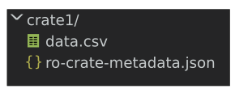
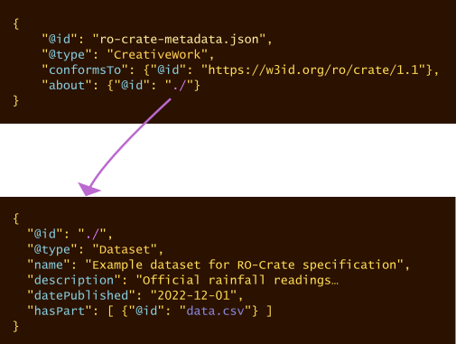
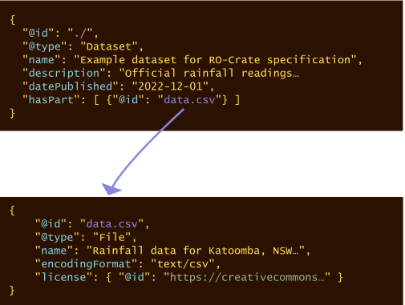
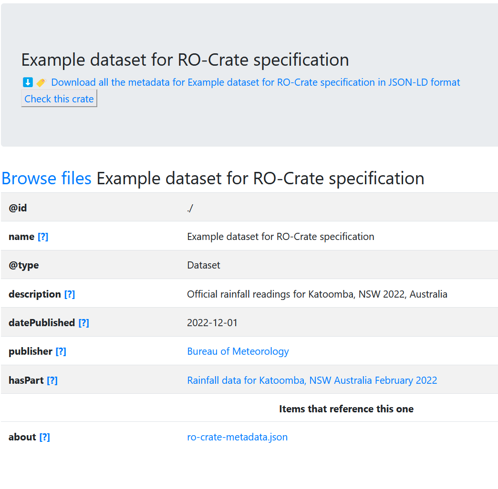

See https://w3id.org/ro/crate for further details about RO-Crate.
This specification is Copyright 2017-2025 University of Technology Sydney, The University of Manchester UK and the RO-Crate contributors.
Licensed under the Apache License, Version 2.0 (the “License”); you may not use this file except in compliance with the License. You may obtain a copy of the License at
http://www.apache.org/licenses/LICENSE-2.0
Unless required by applicable law or agreed to in writing, software distributed under the License is distributed on an “AS IS” BASIS, WITHOUT WARRANTIES OR CONDITIONS OF ANY KIND, either express or implied. See the License for the specific language governing permissions and limitations under the License.
Note: The RO-Crate JSON-LD context and JSON-LD examples within this specification are distributed under CC0 1.0 Universal (CC0 1.0) Public Domain Dedication.
The key words MUST, MUST NOT, REQUIRED, SHALL, SHALL NOT, SHOULD, SHOULD NOT, RECOMMENDED, MAY, and OPTIONAL in this document are to be interpreted as described in RFC 2119.
This document specifies a method, known as RO-Crate (Research Object Crate), of aggregating and describing data for distribution, re-use, publishing, preservation and archiving. RO-Crates aggregate data into a Dataset, and may describe any resource including files, URI-addressable resources, or use other addressing schemes to locate digital or physical data. Describing resources includes technical metadata such as file sizes and types as well as contextual information including how and where datasets and files were created, how they were collated and collected, who was involved in the process, what equipment and software was used, who funded the work, how to cite it, and crucially, how it may be reused, and by whom.
The core of RO-Crate is a machine-readable linked-data document in JSON-LD format known as an RO-Crate Metadata Document. RO-Crate metadata documents can, to a large extent, be created and processed just like any other JSON: knowledge of JSON-LD is not needed, unless extending RO-Crate with additional concepts or combining RO-Crate with other Linked Data technologies.
This section introduces the general RO-Crate concepts through a running example, while the normative sections in the rest of the RO-Crate specification define in more detail these and other concepts using separate examples and recommendations.
In the simplest form, to describe some data on disk, a file named ro-crate-metadata.json is placed in a directory alongside a set of files or directories. This ro-crate-metadata.json file is known as the RO-Crate Metadata Document.
In the example below, a single file data.csv is placed with the RO-Crate Metadata Document in a directory named crate1:

Figure 1: Any folder can be made into an RO-Crate by adding ro-crate-metadata.json
The presence of the ro-crate-metadata.json file means that crate1 and its children can now be considered to be an RO-Crate.
In this running example, the content of the RO Crate Metadata Document is:
{
"@context": "https://w3id.org/ro/crate/1.2/context",
"@graph": [
{
"@id": "ro-crate-metadata.json",
"@type": "CreativeWork",
"conformsTo": {"@id": "https://w3id.org/ro/crate/1.2"},
"about": {"@id": "./"}
},
{
"@id": "./",
"@type": "Dataset",
"name": "Example dataset for RO-Crate specification",
"description": "Official rainfall readings for Katoomba, NSW 2022, Australia",
"datePublished": "2022-12-01",
"publisher": {"@id": "https://ror.org/04dkp1p98"},
"license": {"@id": "http://spdx.org/licenses/CC0-1.0"},
"hasPart": [
{"@id": "data.csv"}
]
},
{
"@id": "data.csv",
"@type": "File",
"name": "Rainfall data for Katoomba, NSW Australia February 2022",
"encodingFormat": "text/csv",
"license": {"@id": "https://creativecommons.org/licenses/by-nc-sa/3.0/au/"}
},
{
"@id": "https://ror.org/04dkp1p98",
"@type": "Organization",
"name": "Bureau of Meteorology",
"description": "Australian Government Bureau of Meteorology",
"url": "http://www.bom.gov.au/"
},
{
"@id": "https://creativecommons.org/licenses/by-nc-sa/3.0/au/",
"@type": "CreativeWork",
"name": "CC BY-NC-SA 3.0 AU",
"description": "Creative Commons Attribution-NonCommercial-ShareAlike 3.0 Australia"
}
]
}The preamble of @context and @graph are JSON-LD structures that help provide global identifiers to the JSON keys and types used in the rest of the RO-Crate Metadata Document. These will largely map to definitions in the schema.org vocabulary, which can be used by RO-Crate extensions to provide additional metadata beyond the RO-Crate specification. It is this feature of JSON-LD that helps make RO-Crate extensible for many different purposes – this is explored further in the appendix on JSON-LD.
However, in the general case it should be sufficient to follow the RO-Crate JSON examples directly without deeper JSON-LD understanding. In short, an RO-Crate Metadata Document contains a flat list of entities as objects in the @graph array. These entities are cross-referenced using @id identifiers rather than being deeply nested.
The first JSON-LD entity in our example above has the @id ro-crate-metadata.json:
{
"@id": "ro-crate-metadata.json",
"@type": "CreativeWork",
"conformsTo": {"@id": "https://w3id.org/ro/crate/1.2"},
"about": {"@id": "./"}
}This required entity, known as the RO-Crate Metadata Descriptor, helps this file self-identify as an RO-Crate Metadata Document, which is conforming to (conformsTo) the RO-Crate specification version 1.2.
The descriptor also indicates via the about property which entity in the @graph array is the RO-Crate Root dataset – the starting point of this RO-Crate.
We can visualise how the above entity references the RO-Crate Root as:

Figure 2: showing RO-Crate Metadata descriptor’s about property pointing at the RO-Crate Root entity with matching @id
By convention, in RO-Crate the @id value of ./ means that this document describes the directory of content in which the RO-Crate Metadata Document is located, as in the example above. This reference from ro-crate-metadata.json is therefore marking the crate1 directory as being the RO-Crate Root. The entity whose @id is the RO-Crate Root is called the Root Data Entity.
Note: This example is a directory-based RO-Crate stored on disk. If the crate is being served from a Web service, such as a data repository or database where files are not organized in directories, then the @id might be an absolute URI instead of ./ – see section Root Data Entity for details.
In an RO-Crate Metadata Document, entities are cross-referenced using @id reference objects, rather than using deeply nested JSON objects. In short, this flattened JSON-LD style allows any entity to reference any other entity, and RO-Crate consumers to directly find all the descriptions of an entity within a single JSON object. So let’s have a look at the Root Data Entity ./:
{
"@id": "./",
"@type": "Dataset",
"…": "…",
"hasPart": [ {"@id": "data.csv"} ]
}The Root Data Entity always has @type Dataset, though it may have more than one type. It has several metadata properties that describe the RO-Crate as a whole, as a collection of resources. The section on the Root Data Entity explores further the required and recommended properties of this entity.
A main type of resources collected are data – simplifying, we can consider data as any kind of file that can be opened in other programs. These are aggregated by the Root Data Entity with the hasPart property. In this example we have an array with a single value, a reference to the entity describing the file data.csv.
Tip: RO-Crates can also contain data entities that are folders and Web resources, as well as non-File-like data like online databases – see the section on data entities for more information.

Figure 3: RO-Crate Root entity referencing the data entity with @id identifier data.csv
If we now follow the @id reference for the corresponding data entity JSON block, we see it has @type value of File and additional metadata such as encodingFormat. It is recommended that every entity has a human readable name, which as shown in this example, does not need to match the filename/identifier. The encodingFormat indicates the media file type so that consumers of the crate can open data.csv in an appropriate program.
{
"@id": "data.csv",
"@type": "File",
"name": "Rainfall data for Katoomba, NSW Australia February 2022",
"encodingFormat": "text/csv",
"license": { "@id": "https://creativecommons.org/licenses/by-nc-sa/3.0/au/" }
},For more information on describing files and directories, including their recommended and required attributes, see the section on data entities.
Moving back to the RO-Crate Root Data Entity (with @id ./), the publisher of this Dataset should be indicated using the property publisher and using a URI to identify the publishing Organization, linking to what is known as a Contextual Entity that provides some information about the Organization such as its name and web address.
{
"@id": "./",
"@type": "Dataset",
"publisher": {"@id": "https://ror.org/04dkp1p98"},
"…": "…"
}
{
"@id": "https://ror.org/04dkp1p98",
"@type": "Organization",
"name": "Bureau of Meteorology",
"description": "Australian Government Bureau of Meteorology",
"url": "http://www.bom.gov.au/"
}You may notice the subtle difference between a data entity that is conceptually part of the RO-Crate and is file-like (containing bytes), while this contextual entity is a representation of a real-life organization that can’t be downloaded: following the URL, we would only get its description. The section on contextual entities explores several of the entities that can be added to the RO-Crate to provide it with a context, for instance how to link to authors and their affiliations. Simplifying slightly, a data entity is referenced from hasPart in a Dataset, while a contextual entity is referenced using any other defined property.
An RO-Crate can be distributed on disk, in packaged format such as a zip file or disk image, or placed on a static website. In any of these cases, an RO-Crate should have an accompanying HTML version (ro-crate-preview.html) designed to be human-readable. The exact contents of the preview may vary but should correspond to the RO-Crate Metadata Document content and link to the contained data entities. The preview may be generated automatically from the RO-Crate Metadata Document (see RO-Crate tools), or even by hand (equivalent to a README).
Below is a screenshot from the preview of the running example, which was generated using the ro-crate-html package:

Figure 4: RO-Crate preview of the running example.
The rest of this specification is structured as follows:
ro-crate-metadata.json and data files can be organized within an RO-Crate Root directory.ro-crate-metadata.json) and Root Data Entity (./) including their required and recommended properties.People and Organization referenced from author, publication, affiliation etc. Metadata like licensing, funding, locations and subjects can be described using contextual entities.schema.org and other vocabularies, or require a certain type of data entity used in a particular research domain. Profiles can themselves be expressed as an RO-Crate, which is also explored in this section.@id in JSON-LD or extending RO-Crate terms. The appendix also explores how an RO-Crate can be packaged with BagIt or used as part of a repository.Throughout the specification you will find references to the keys and types reused from schema.org through the JSON-LD context, for instance Dataset, which define many more properties than the ones highlighted by sections like Root Data Entity. The intention is that the RO-Crate specification gives a common minimum of metadata, and that producers of RO-Crates can use additional schema.org types and properties as needed. When some patterns emerge from such extensions they can be formalized in a published profile to ensure they are also used consistently.
RO-Crate: A dataset, which is described in a JSON-LD RO-Crate Metadata Document.
RO-Crate Metadata Document: A JSON-LD document that describes the RO-Crate with structured data in form of RO-Crate JSON-LD. This may be stored in a file-system as an RO-Crate Metadata File, served via web site or via an API.
RO-Crate Metadata File: An RO-Crate Metadata Document stored in a file named ro-crate-metadata.json in the RO-Crate Root of an Attached RO-Crate Package. See section RO-Crate Metadata Document.
Attached RO-Crate Package: A file system directory which functions as a packaged dataset, indicated by the presence of the RO-Crate Metadata File. An Attached RO-Crate Package carries a payload of zero or more files. See section Types of RO-Crate.
Detached RO-Crate Package: A stand-alone RO-Crate Metadata Document which defines a virtual data package by referencing online materials. A Detached RO-Crate Package does not have a payload. See section Types of RO-Crate.
Detached RO-Crate Metadata File: An RO-Crate Metadata Document stored in a file named ${prefix}-ro-crate-metadata.json or ro-crate-metadata.json where ${prefix}, if present, is a file-system safe version identifier or name for the RO-Crate.
RO-Crate Root: The top-level directory of an RO-Crate Package. See section RO-Crate structure.
RO-Crate Metadata Descriptor: A Contextual Entity of type CreativeWork, which describes the RO-Crate Metadata Document and links it to the Root Data Entity. See section RO-Crate Metadata Descriptor
RO-Crate Website: Human-readable HTML pages which describe the RO-Crate (i.e. the Root Data Entity, its Data Entities and Context Entities), with a home-page at ro-crate-preview.html. See section RO-Crate Website.
Type: A classification of objects or their descriptions. The type (or “class”) is given as a short-hand key, mapped by the RO-Crate JSON-LD Context to a URI that has the type definition. See appendix RO-Crate JSON-LD.
Data Entity: A JSON-LD representation (in the RO-Crate Metadata Document) of a directory, file, or other Web resource which is considered contained by the RO-Crate. See section Data entities.
Property: A relationship from one entity to another entity, or to a value. The type of relationship is identified by a URI, mapped to a key by JSON-LD. See appendix RO-Crate JSON-LD.
Root Data Entity: A Data Entity of type Dataset, representing the RO-Crate as a whole. See section Root Data Entity.
JSON-LD: A JSON-based file format for storing Linked Data. This document assumes JSON-LD 1.0. JSON-LD use a context to map from JSON keys to URIs. See appendix RO-Crate JSON-LD.
JSON: The JavaScript Object Notation (JSON) Data Interchange Format as defined by RFC 7159; a structured text file format that can be programmatically consumed and generated in a wide range of programming languages. The main JSON structures are objects ({}) indexed by keys, sequential arrays ([]) and literal values ("").
Contextual Entity: A JSON-LD representation of an entity associated with another Entity, in order to adequately describe it. For example, a Person, Organization (including research projects), item of equipment (IndividualProduct), license or any other thing or event that forms part of the metadata for a Data Entity. Properties of contextual entities may refer to further entities. See section Contextual Entities.
Linked Data: A data structure where properties, types and resources are identified with URIs, which if retrieved over the Web, further describe or provide the identified property/type/resource.
URI: A Uniform Resource Identifier as defined in RFC 3986, for example http://example.com/path/file.html - commonly known as URL. In this document the term URI includes IRI, which also permit international Unicode characters. The URI identifies a downloadable resource (e.g. an image) or a concept (e.g. a type definition).
URI Path: The relative path element of an URI as defined in RFC3986 section 3.3, e.g. path/file.html
RO-Crate JSON-LD Context: A JSON-LD context that provides Linked Data mapping for RO-Crate metadata to vocabularies like Schema.org. This mapping assigns meaning to the JSON keys, see appendix RO-Crate JSON-LD.
RO-Crate JSON-LD: JSON-LD that use the RO-Crate JSON-LD Context and contain RO-Crate metadata, written as if flattened and then compacted according to the rules in JSON-LD 1.0. The RO-Crate JSON-LD for an RO-Crate is stored or transmitted in the _RO-Crate Metadata Document.
Throughout this specification, RDF terms (properties, types) are referred to using the keys defined in the RO-Crate JSON-LD Context.
Following Schema.org practice, property names start with lowercase letters and Type names start with uppercase letters.
In the RO-Crate Metadata Document the RDF terms use their RO-Crate JSON-LD names as defined in the RO-Crate JSON-LD Context, which is available at https://w3id.org/ro/crate/1.2/context
An RO-Crate Metadata Document is used to package data in one of two ways:
ro-crate-metadata.json.${prefix}-ro-crate-metadata.json rather than ro-crate-metadata.json where the variable ${prefix} is a human readable version of the dataset’s ID or name, to signal that on disk, the presence of the file does not indicate an Attached RO-Crate Data Package.RO-Crate Metadata Documents MAY also be processed in non-packaging contexts by tools such as website generators or crate visualizers, where data entities are not processed, or in applications which use RO-Crate conventions for representing context (such as a schema definition using Schema.org conventions).
Note: Client software may provide modes which force a particular packaging mode to be assumed. For example, if the software is passed a directory, then it would assume that is processing an Attached RO-Crate Package. If passed a path to a file, it could work in Detached RO-Crate Package mode, and possibly attempt to resolve Web Based Data Entities. It could also provide a mode to simply parse the document and process it without referencing or validating Data entities in any special way.
In all crates the metadata is completed with contextual entities that further describe the relationships and context of the data to form a Research Object.
ro-crate-metadata.json)JSON-LD is a structured form of JSON that can represent a Linked Data graph.
The graph MUST describe:
Any referenced contextual entities SHOULD also be described in the RO-Crate Metadata Document with the same identifier. Similarly any contextual entity in the RO-Crate Metadata Document SHOULD be linked to from at least one of the other entities using the same identifier.
The appendix RO-Crate JSON-LD details the general structure of the JSON-LD that is expected in the RO-Crate Metadata Document. In short, the rest of this specification describes the different types of entities that can be added as {} objects to the RO-Crate JSON-LD @graph array below:
{ "@context": "https://w3id.org/ro/crate/1.2/context",
"@graph": [
]
}An Attached RO-Crate Package is used to contain and describe an optional payload of files and directories as well as web-based data entities along with their contextual information.
When processing an Attached RO-Crate Package the RO-Crate Metadata Document MUST be present in the RO-Crate Root and it MUST be named ro-crate-metadata.json.
An Attached RO-Crate Package can be stored and published in multiple ways depending on its use:
/files/shared/crates/my-crate-01/)A valuable feature of the Attached RO-Crate Package approach is that the metadata is preserved when a crate is transferred between these types of storage/publication systems.
The file path structure an Attached RO-Crate Package MUST follow is:
<RO-Crate root directory>/
| ro-crate-metadata.json # RO-Crate Metadata File containing the RO-Crate Metadata Document MUST be present
| ro-crate-preview.html # RO-Crate Website homepage MAY be present
| ro-crate-preview_files/ # MAY be present
| | [other RO-Crate Website files]
| [payload files and directories] # 0 or moreThe name of the RO-Crate root directory is not defined, but a root directory is identifiable by the presence of the RO-Crate Metadata File, ro-crate-metadata.json. For instance, if an RO-Crate is archived in a ZIP-file, the ZIP root directory is an RO-Crate root directory if it contains ro-crate-metadata.json.
The payload files and directories MAY be described within the RO-Crate Metadata File as Data Entities. Additional Web-based Data Entities MAY also be described, but are not considered part of the payload.
The @id of the Root Data Entity in an Attached RO-Crate Package MUST be either ./ or be a URI, such as a DOI URL or other persistent URL which is considered to be the main identifier of the Attached RO-Crate Package.
Note: Earlier versions of RO-Crate mandated an @id of ./ as a convention for identifying the Root Data Entity, but the use of the RO-Crate Metadata Descriptor means that this is no longer required, freeing-up the Root Data Entity @id to be used to indicate what should be considered the canonical URI for an RO-Crate Package. Other mechanisms for specifying the ‘main identifier’ involve multiple JSON-LD entities and may be ambiguous.
These are the actual files and directories that make up the payload of the dataset being described in an Attached RO-Crate Package.
The base RO-Crate specification makes no assumptions about the presence of any specific files or folders beyond the reserved RO-Crate files described above.
Payload files may appear directly in the RO-Crate Root alongside the RO-Crate Metadata File, and/or appear in sub-directories of the RO-Crate Root. Each file and directory MAY be represented as Data Entities in the RO-Crate Metadata File.
An RO-Crate may also contain Web-based Data Entities that are not present as part of the payload and referenced using absolute URIs. These may require additional preservation measures.
Tip: An RO-Crate packaged with BagIt may reference external files which are not present in the RO-Crate Root hierarchy until the BagIt has been completed. This method for referencing external files can be used for files that are large, require authentication or otherwise inconvenient to transfer with the RO-Crate, but which should nevertheless still be considered part of the payload. RO-Crate has a similar mechanism for referencing such external files using both an @id to reference a local path and contentUrl property to indicate a source for that data. See the section on File Data Entities.
ro-crate-preview.html and ro-crate-preview_files/) for PackagesIn addition to the machine-oriented RO-Crate Metadata Document, an Attached RO-Crate Package MAY include a human-readable HTML rendering of the same information, known as the RO-Crate Website. If present, the RO-Crate Website MUST be a file named ro-crate-preview.html in the root directory, which MAY serve as the entry point to other web-resources, which MUST be in ro-crate-preview_files/ in the root directory.
If present in the root directory of an Attached RO-Crate Package as ro-crate-preview.html (or otherwise served in a Detached RO-Crate Package), the RO-Crate Website MUST:
ro-crate-preview.html SHOULD:
RO-Crate JSON-LD Context to a URI, indicate this (the simplest way is to link the key to its definition).ro-crate-preview_files/Note: Previous versions of the Specification recommended that the RO-Crate Website should contain a redundant copy of the RO-Crate Metadata Document, but there is no evidence that this has been useful and it is no longer recommended.
The RO-Crate Website is not considered a part of the RO-Crate payload in an Attached RO-Crate Package, but serves as a way to make metadata available in a user-appropriate format. The ro-crate-preview.html file and the ro-crate-preview_files/ directory and any contents SHOULD NOT be included in the hasPart property of the Root Dataset or any other Dataset entity within an RO-Crate.
Metadata about parts of the RO-Crate Website MAY be included in an RO-Crate as in the following example. Metadata such as an author property, dateCreated or other provenance can be included, including details about the software that created them, as described in Software used to create files.
{
"@id": "ro-crate-preview.html",
"@type": "CreativeWork",
"about": {"@id": "./"}
}
{
"@id": "https://www.npmjs.com/package/ro-crate-html-js",
"@type": "SoftwareApplication",
"url": "https://www.npmjs.com/package/ro-crate-html-js",
"name": "ro-crate-html-js",
"version": "1.4.19"
}
{
"@id": "#ro-crate-preview-generation",
"@type": "CreateAction",
"name": "Create HTML summary",
"endTime": "2022-10-019T17:01:07+10:00",
"instrument": {
"@id": "https://www.npmjs.com/package/ro-crate-html-js"
},
"object": {
"@id": "ro-crate-metadata.json"
},
"result": {
"@id": "ro-crate-preview.html"
}
}Attached RO-Crates Packages SHOULD be self-describing and self-contained.
A minimal Attached RO-Crate Package is a directory containing a single RO-Crate Metadata Document stored as an RO-Crate Metadata File ro-crate-metadata.json.
At the basic level, an Attached RO-Crate Package is a collection of files and resources represented as a Schema.org Dataset, that together form a meaningful unit for the purposes of communication, citation, distribution, preservation, etc. The RO-Crate Metadata Document describes the RO-Crate, and MUST be stored in the RO-Crate Root.
While RO-Crate is well catered for describing a Dataset as files and relevant metadata that are contained by the RO-Crate in the sense of living within the same root directory, RO-Crates can also reference external resources which are stored or accessed separately, via absolute URIs. This is particularly recommended where some resources cannot be co-hosted for practical or legal reasons, or if the RO-Crate itself is primarily web-based.
It is important to note that the RO-Crate Metadata Document is not necessarily an exhaustive manifest or inventory, that is, it is not required to list or describe all files in the package. Rather it is focused on providing sufficient amount of metadata to understand and use the content, and is designed to be compatible with existing and future approaches that do have full inventories / manifest and integrity checks, e.g. by using checksums, such as BagIt and Oxford Common File Layout OCFL Objects.
The intention is that RO-Crates can work well with a variety of archive file formats, e.g. tar, zip, etc., and approaches to capturing file manifests and file fixity, such as BagIt, OCFL and git (see also appendix Combining with other packaging schemes). An RO-Crate can also be hosted on the web or mainly refer to web resources, although extra care to ensure persistence and consistency should be taken for archiving such RO-Crates.
A Detached RO-Crate Package is an RO-Crate, defined in an RO-Crate Metadata Document without a defined root directory, where the RO-Crate Metadata Document content is accessed independently (e.g. as part of a programmatic API).
Unlike an Attached RO-Crate Package, a Detached RO-Crate Package is not processed in a file-system context and thus does not carry a data payload in the same sense, but may reference data deposited separately, or purely reference contextual entities.
In a Detached RO-Crate Package the root data entity SHOULD have an @id which is an absolute URL if it is available online. If it is not yet, or will never be available online then @id MAY be any valid URI - including ./.
Any data entities in a Detached RO-Crate Package Package MUST be Web-based Data Entities.
A Detached RO-Crate Package may still use #-based local identifiers for contextual entities.
The concept of an RO-Crate Website is undefined for a Detached RO-Crate Package.
To distribute a Detached RO-Crate Package and optionally to provide an RO-Crate Website, any Detached RO-Crate Package can be saved in a directory (and zipped or otherwise bundled) and will function as an Attached RO-Crate Package with no payload data. See the appendix on converting from Detached to Attached RO-Crate Package for further guidance on this.
RO-Crate aims to capture and describe the Research Object using structured metadata. Specifically, an RO-Crate is described using JSON-LD by an RO-Crate Metadata Document. As explained in section RO-Crate Structure this may be stored in an RO-Crate Metadata File.
The RO-Crate Metadata Document contains the metadata that describes the RO-Crate and its content, in particular:
Dataset itself, a gathering of dataThis machine-readable metadata can also be represented for human consumption in the RO-Crate Website, linking to data and Web resources.
RO-Crate makes use of the Linked Data principles for its description. In particular:
RO-Crate realizes these principles using a particular set of technologies and best practices:
For all entities listed in an RO-Crate Metadata Document the following principles apply:
@id (see Describing entities in JSON-LD).@type, which MAY be an array.@type SHOULD include at least one Schema.org type that accurately describes the entity. Thing or CreativeWork are valid fallbacks if no alternative external or ad-hoc term is found (see Extending RO-Crate).name, in particular if its @id does not go to a human-readable Web page.@type (or superclass) according to their definitions. For instance, the property publisher can be used on a Dataset as it applies to its superclass CreativeWork.author property to a Person entity) MUST use the { "@id": "..."} object form (see JSON-LD appendix).Schema.org is the base metadata standard for RO-Crate. Schema.org was chosen because it is widely used on the World Wide Web and supported by search engines, on the assumption that discovery is likely to be maximized if search engines index the content.
Note: As far as we know there is no alternative, well-maintained linked-data schema for research data with the coverage needed for this project - i.e. a single standard for expressing all the examples presented in this specification.
RO-Crate relies heavily on Schema.org, using a constrained subset of JSON-LD, and this specification gives opinionated recommendations on how to represent the metadata using existing linked data best practices.
Tip: The main principle of RO-Crate is to use a Schema.org term whenever possible, even if its official definition may seem broad or related to every day objects. For instance, IndividualProduct can describe scientific equipment and instruments (see Provenance of entities). RO-Crate implementers are free to use additional properties and types beyond this specification (see also appendix Extending RO-Crate).
Generally, the standard type and property names (terms) from Schema.org should be used. However, RO-Crate uses variant names for some elements, specifically:
File is mapped to http://schema.org/MediaObject which was chosen as a compromise as it has many of the properties that are needed to describe a generic file. Future versions of Schema.org or a research data extension may re-define File.Journal is mapped to http://schema.org/Periodical.Warning :JSON-LD examples given on the Schema.org website might not be in flattened form, but RO-Crate JSON-LD is flattened; any nested entities in RO-Crate JSON-LD MUST be described as separate contextual entities in the flat @graph list.
To simplify processing and avoid confusion with string values, the RO-Crate JSON-LD Context requires URIs and entity references to be given in the form "author": {"@id": "http://example.com/alice"}, even where Schema.org for some properties otherwise permit shorter forms like "author": "http://example.com/alice".
See the appendix RO-Crate JSON-LD for details.
RO-Crate also uses the Portland Common Data Model (PCDM version https://pcdm.org/2016/04/18/models) to describe repositories or collections of digital objects and imports these terms:
RepositoryObject mapped to http://pcdm.org/models#ObjectRepositoryCollection mapped to http://pcdm.org/models#CollectionRepositoryFile mapped to http://pcdm.org/models#FilehasMember mapped to http://pcdm.org/models#hasMemberhasFile mapped to http://pcdm.org/models#hasFileNote: The terms RepositoryObject and RepositoryCollection are renamed to avoid collision between other vocabularies and the PCDM terms Collection and Object. The term RepositoryFile is renamed to avoid clash with RO-Crate’s File mapping to http://schema.org/MediaObject.
RO-Crate uses the Profiles Vocabulary to describe profiles using these terms and definitions:
ResourceDescriptor mapped to http://www.w3.org/ns/dx/prof/ResourceDescriptor (definition)ResourceRole mapped to http://www.w3.org/ns/dx/prof/ResourceRole (definition)Profile mapped to http://www.w3.org/ns/dx/prof/Profile (definition)hasArtifact mapped to http://www.w3.org/ns/dx/prof/hasArtifact (definition)hasResource mapped to http://www.w3.org/ns/dx/prof/hasResource (definition)hasRole mapped to http://www.w3.org/ns/dx/prof/hasRole (definition)From Dublin Core Terms RO-Crate uses:
conformsTo mapped to http://purl.org/dc/terms/conformsToStandard mapped to http://purl.org/dc/terms/StandardFrom the IANA link relations registry:
cite-as mapped to http://www.iana.org/assignments/relation/cite-as (defined by RFC8574)These terms are being proposed by Bioschemas profile ComputationalWorkflow 1.0-RELEASE and FormalParameter 1.0-RELEASE to be integrated into Schema.org:
ComputationalWorkflow mapped to https://bioschemas.org/ComputationalWorkflowFormalParameter mapped to https://bioschemas.org/FormalParameterinput mapped to https://bioschemas.org/properties/inputoutput mapped to https://bioschemas.org/properties/outputNote: In this specification the proposed Bioschemas terms use the temporary https://bioschemas.org/ namespace; future releases of RO-Crate may reflect mapping to the http://schema.org/ namespace.
To support geometry in Places, these terms from the GeoSPARQL ontology:
Geometry mapped to http://www.opengis.net/ont/geosparql#GeometryasWKT mapped to http://www.opengis.net/ont/geosparql#asWKTFrom CodeMeta 3.0:
buildInstructions mapped to https://codemeta.github.io/terms/buildInstructionsdevelopmentStatus mapped to https://codemeta.github.io/terms/developmentStatuscontinuousIntegration mapped to https://codemeta.github.io/terms/continuousIntegrationembargoEndDate mapped to https://codemeta.github.io/terms/embargoEndDatehasSourceCode mapped to https://codemeta.github.io/terms/hasSourceCodeisSourceCodeOf mapped to https://codemeta.github.io/terms/isSourceCodeOfissueTracker mapped to https://codemeta.github.io/terms/issueTrackerreadme mapped to https://codemeta.github.io/terms/readmereferencePublication mapped to https://codemeta.github.io/terms/referencePublicationsoftwareSuggestions mapped to https://codemeta.github.io/terms/softwareSuggestionsWarning :As of 2025-01-09, the CodeMeta URIs do not resolve correctly, but are used here to match the Codemeta JSON-LD context https://w3id.org/codemeta/3.0 (issue #275). The CodeMeta terms maintainer and funding are not mapped, as these are already defined by schema.org.
The RO-Crate community maintains a common namespace for terms not covered by other vocabularies. This is mainly used by RO-Crate profiles, but the following term is included in the core RO-Crate context:
localPath mapped to https://w3id.org/ro/terms#localPathRO-Crate is simply a way to make metadata assertions about a set of files and folders that make up a Dataset. These assertions can be made at two levels:
This document has guidelines for ways to represent common requirements for describing data in a research context, e.g.:
However, as RO-Crate uses the Linked Data principles, adopters of RO-Crate are free to supplement RO-Crate using Schema.org metadata and/or assertions using other Linked Data vocabularies (see Extending RO-Crate).
A future version of this specification will aim to cater for variable-level assertions: in some cases, e.g. for tabular data, additional metadata may be provided about the structure and variables within a given file. See the use case Describe a tabular data file directly in RO-Crate metadata for work-in-progress.
RO-Crate JSON-LD SHOULD use the following IDs where possible:
identifier which is RECOMMENDED to be a https://doi.org/ URI.In the absence of the above, RO-Crates SHOULD contain stable persistent URIs to identify all entities wherever possible.
The Root Data Entity is a Dataset that represents the RO-Crate as a whole; a Research Object that includes the Data Entities and the related Contextual Entities.
The RO-Crate Metadata Document MUST contain a self-describing RO-Crate Metadata Descriptor with the @id value ro-crate-metadata.json (or ro-crate-metadata.jsonld in legacy crates for RO-Crate 1.0 or older) and @type CreativeWork. This descriptor MUST have an about property referencing the Root Data Entity’s @id.
{ "@context": "https://w3id.org/ro/crate/1.2/context",
"@graph": [
{
"@type": "CreativeWork",
"@id": "ro-crate-metadata.json",
"about": {"@id": "./"},
"conformsTo": {"@id": "https://w3id.org/ro/crate/1.2"}
},
{
"@id": "./",
"@type": "Dataset",
...
}
]
}Note: Even in Detached RO-Crate Packages, where the RO-Crate Metadata File may be absent or named with a prefix, the identifier ro-crate-metadata.json MUST be used within the RO-Crate JSON-LD.
The conformsTo of the RO-Crate Metadata Descriptor SHOULD have a single value which is a versioned permalink URI of the RO-Crate specification that the RO-Crate JSON-LD conforms to. The URI SHOULD start with https://w3id.org/ro/crate/.
Note: In RO-Crates conforming to version 1.1 and earlier, conformsTo MAY be an array and can include RO-Crate profiles in addition to the base specification. In version 1.2, it is now recommended that profile declarations are included on the Root Data Entity instead (see Direct Properties of the Root Data Entity).
Consumers processing the RO-Crate as a JSON-LD graph can find the Root Data Entity by following this algorithm:
@graph array@id is ro-crate-metadata.jsonabout object, keep the @id URI as variable root@id is ro-crate-metadata.jsonldabout object, keep the @id URI as variable legacyroot@graph array@id URI that matches a non-null root return it@graph array@id URI that matches a non-null legacyroot return itNote that the above can be implemented efficiently by first building a map (entity_map) of all entities using their @id as keys (which is typically also helpful for further processing) and then performing a series of lookups. Ignoring the legacy case for now, this lookup code could be:
metadata_entity = entity_map["ro-crate-metadata.json"]
root_entity = entity_map[metadata_entity["about"]["@id"]]See also the appendix on finding RO-Crate Root in RDF triple stores.
To ensure a base-line interoperability between RO-Crates, a minimum set of metadata is required for the Root Data Entity. As stated earlier the RO-Crate Metadata Document is not an exhaustive manifest or inventory, that is, it does not necessarily list or describe all files in the package. For this reason, there are no minimum metadata requirements in terms of describing Data Entities (files and folders) other than the Root Data Entity. Extensions of RO-Crate dealing with specific types of dataset may apply further constraints or requirements of metadata beyond the Root Data Entity (see the appendix Extending RO-Crate).
The RO-Crate Metadata Descriptor MAY contain information such as licensing for the RO-Crate Metadata Document if metadata is licensed separately from the crate’s Data entities.
The section below outlines the properties that the Root Data Entity MUST have.
The Root Data Entity MUST have all of the properties listed below. Each property also has requirements that apply to its value:
@type: MUST be Dataset or an array that contains Dataset@id: SHOULD be the string ./ or an absolute URI (see below)name: SHOULD identify the dataset to humans well enough to disambiguate it from other RO-Cratesdescription: SHOULD further elaborate on the name to provide a summary of the context in which the dataset is important.datePublished: MUST be a single string value in ISO 8601 date format, SHOULD be specified to at least the precision of a day, and MAY be a timestamp down to the millisecond.license: SHOULD link to a Contextual Entity or Data Entity in the RO-Crate Metadata Document with a name and description (see section on licensing). MAY, if necessary, be a textual description of how the RO-Crate may be used.Note: These requirements are stricter than those published for Google Dataset Search which requires a Dataset to have a name and description.
Warning :The properties above are not sufficient to generate a DataCite citation. Advice on integrating with DataCite will be provided in a future version of this specification, or as an implementation guide.
Additional properties of schema.org types Dataset and CreativeWork MAY be added to further describe the RO-Crate as a whole, e.g. author, abstract, publisher. See sections contextual entities and provenance for further details.
If the RO-Crate conforms to one or more profiles, this should be described following the guidance in the section Declaring conformance of an RO-Crate profile.
The Root Data Entity’s @id SHOULD be either ./ (indicating the directory of ro-crate-metadata.json is the RO-Crate Root), or an absolute URI.
Note: RO-Crates that have been assigned a persistent identifier (e.g. a DOI) MAY indicate this using identifier on the Root Data Entity using the approach set out in the Science On Schema.org guides, that is through a PropertyValue or MAY use a full persistent URL as the @id for the Root Data Entity.
Note: RO-Crate 1.1 and earlier recommended identifier to be plain string URIs. Clients SHOULD be permissive of an RO-Crate identifier being a string (which MAY be a URI), or a @id reference, which SHOULD be represented as a PropertyValue entity which MUST have a human readable value, and SHOULD have a url if the identifier is Web-resolvable. A citable representation of this persistent identifier MAY be given as a description of the PropertyValue, but as there are more than 10.000 known citation styles, no attempt should be made to parse this string.
It is RECOMMENDED that resolving the identifier programmatically returns the RO-Crate Metadata Document or an archive (e.g. ZIP) that contains the RO-Crate Metadata File, using content negotiation and/or Signposting. With an RO-Crate identifier that is persistent and resolvable in this way from a URI, the Root Data Entity SHOULD indicate this using the cite-as property according to RFC8574. Likewise, an HTTP/HTTPS server of the resolved RO-Crate Metadata Document or archive (possibly after redirection) SHOULD indicate that persistent identifier in its Signposting headers using Link rel="cite-as".
Tip: The above cite-as MAY go to a repository landing page, and MAY require authentication, but MUST ultimately have the RO-Crate as a downloadable item, which SHOULD be programmatically accessible through content negotiation or Signposting (Link rel=\"describedby\" for an RO-Crate Metadata Document, or Link rel=\"item\" for an archive). To rather associate a textual scholarly citation for a crate (e.g. journal article), indicate instead a publication via citation property.
Any entity which is a subclass of CreativeWork, including Datasets like the Root Data Entity, MAY have a creditText property which provides a textual citation for the entity.
The following RO-Crate Metadata Document represents a minimal description of an RO-Crate that also follows the identifier recommendations above for use in an Attached RO-Crate Package.
{ "@context": "https://w3id.org/ro/crate/1.2/context",
"@graph": [
{
"@id": "ro-crate-metadata.json",
"@type": "CreativeWork",
"about": {"@id": "./"},
"conformsTo": {"@id": "https://w3id.org/ro/crate/1.2"}
},
{
"@id": "./",
"@type": "Dataset",
"identifier": {"@id": "https://doi.org/10.4225/59/59672c09f4a4b"},
"cite-as": "https://doi.org/10.4225/59/59672c09f4a4b",
"datePublished": "2017",
"name": "Data files associated with the manuscript:Effects of facilitated family case conferencing for ...",
"description": "Palliative care planning for nursing home residents with advanced dementia ...",
"license": {"@id": "https://creativecommons.org/licenses/by-nc-sa/3.0/au/"},
"creditText": "Agar, M. et al., 2017. Data supporting \"Effects of facilitated family case conferencing for advanced dementia: A cluster randomised clinical trial\". https://doi.org/10.4225/59/59672c09f4a4b"
},
{
"@id": "https://creativecommons.org/licenses/by-nc-sa/3.0/au/",
"@type": "CreativeWork",
"description": "This work is licensed under the Creative Commons Attribution-NonCommercial-ShareAlike 3.0 Australia License. To view a copy of this license, visit http://creativecommons.org/licenses/by-nc-sa/3.0/au/ or send a letter to Creative Commons, PO Box 1866, Mountain View, CA 94042, USA.",
"identifier": "https://creativecommons.org/licenses/by-nc-sa/3.0/au/",
"name": "Attribution-NonCommercial-ShareAlike 3.0 Australia (CC BY-NC-SA 3.0 AU)"
},
{
"@id": "https://doi.org/10.4225/59/59672c09f4a4b",
"@type": "PropertyValue",
"propertyID": "https://registry.identifiers.org/registry/doi",
"value": "doi:10.4225/59/59672c09f4a4b",
"url": "https://doi.org/10.4225/59/59672c09f4a4b"
}
]
}Alternatively the following is also valid, this time using the DOI as the @id of the Root Data Entity:
{
"@id": "ro-crate-metadata.json",
"@type": "CreativeWork",
"about": {"@id": "https://doi.org/10.4225/59/59672c09f4a4b"},
"conformsTo": {"@id": "https://w3id.org/ro/crate/1.2"}
},
{
"@id": "https://doi.org/10.4225/59/59672c09f4a4b",
"@type": "Dataset",
"cite-as": "https://doi.org/10.4225/59/59672c09f4a4b",
"datePublished": "2017",
"name": "Data files associated with the manuscript:Effects of facilitated family case conferencing for ...",
"description": "Palliative care planning for nursing home residents with advanced dementia ...",
"license": {"@id": "https://creativecommons.org/licenses/by-nc-sa/3.0/au/"},
"creditText": "Agar, M. et al., 2017. Data supporting \"Effects of facilitated family case conferencing for advanced dementia: A cluster randomised clinical trial\". https://doi.org/10.4225/59/59672c09f4a4b"
}The primary purpose for RO-Crate is to gather and describe a set of Data Entities in the form of:
File.Dataset.An entity which has File or Dataset as one of its @type values:
@id is an absolute URI or a relative URI.@id which is a local identifier beginning with a #, in which case it is not considered to be a Data Entity.The requirements for File and Dataset are set out below.
The Data Entities can be further described by referencing contextual entities such as persons, organizations and publications.
Where files and folders are represented as Data Entities in the RO-Crate JSON-LD, these MUST be linked to, either directly or indirectly, from the Root Data Entity using the hasPart property. Directory hierarchies MAY be represented with nested Dataset Data Entities, or the Root Data Entity MAY refer to files anywhere in the hierarchy using hasPart.
Data Entities representing files MUST have "File" as a value for @type. File is an RO-Crate alias for http://schema.org/MediaObject. The term File includes:
The rules for the @id property of Files are set out below.
In all cases, @type MAY be an array to also specify a more specific type, e.g. "@type": ["File", "ComputationalWorkflow"]
There is no requirement to represent every file and folder in an RO-Crate as Data Entities in the RO-Crate JSON-LD. Reasons for not describing files would include that the files: - are described in some other way, for example a manifest or another package management system, - are supporting files for a software application, - have metadata embedded in their filenames or paths which can be documented whithout having to describe every file, - have a purpose that is unknown to the crate author, but they need to be preserved as part of an archive.
In any of the above cases where files are not described, a directory containing a set of files MAY be described using a Dataset Data Entity that encapsulates the files with a description property that explains the contents. If the RO-Crate file structure is flat, or files are not grouped together, a description property on the Root Data Entity may be used, or a Dataset with a local reference beginning with # (e.g. to describe a certain type of file which occurs throughout the crate). This approach is recommended for RO-Crates which are to be deposited in a long-term archive.
@idsNote that all @id identifiers must be valid URI references. Care must be taken to express any relative paths using / separator, correct casing, and escape special characters like space (%20) and percent (%25), for instance a File Data Entity from the Windows path Results and Diagrams\almost-50%.png becomes "@id": "Results%20and%20Diagrams/almost-50%25.png" in the RO-Crate JSON-LD.
In this document the term URI includes international IRIs; the RO-Crate Metadata Document is always UTF-8 and international characters in identifiers SHOULD be written using native UTF-8 characters (IRIs), however traditional URL encoding of Unicode characters with % MAY appear in @id strings. Example: "@id": "面试.mp4" is preferred over the equivalent "@id": "%E9%9D%A2%E8%AF%95.mp4"
The following is an example of an Attached RO-Crate Package linking to a file and folders.
The file layout of the example is:
<RO-Crate root>/
| ro-crate-metadata.json
| cp7glop.ai
| lots_of_little_files/
| | file1
| | file2
| | ...
| | file54An example RO-Crate JSON-LD for the above would be as follows.
This example contains both a File Data Entity and a Directory Data Entity.
{ "@context": "https://w3id.org/ro/crate/1.2/context",
"@graph": [
{
"@type": "CreativeWork",
"@id": "ro-crate-metadata.json",
"conformsTo": {"@id": "https://w3id.org/ro/crate/1.2"},
"about": {"@id": "./"}
},
{
"@id": "./",
"@type": [
"Dataset"
],
"name": "Example Dataset",
"datePublished": "2016-02-01",
"author": "https://orcid.org/0000-0003-4953-0830",
"license": "CC-BY",
"hasPart": [
{
"@id": "cp7glop.ai"
},
{
"@id": "lots_of_little_files/"
}
]
},
{
"@id": "cp7glop.ai",
"@type": "File",
"name": "Diagram showing trend to increase",
"contentSize": "383766",
"description": "Illustrator file for Glop Pot",
"encodingFormat": "application/pdf"
},
{
"@id": "lots_of_little_files/",
"@type": "Dataset",
"name": "Too many files",
"description": "This directory contains many small files -- the name of the file is a date in YYYY-MM-DD.csv, each file contains daily temperature readings, sampled hourly for the Glop Pot cave."
},
{
"@id": "https://orcid.org/0000-0003-4953-0830",
"@type": "Person",
"name": "Michael Lake",
}
]
}A File Data Entity MUST have the following properties:
@type: MUST be File, or an array where File is one of the values.@id: MUST be a relative or absolute URI.Further constraints on the @id are dependent on whether the File entity is being considered as part of an Attached RO-Crate Package or Detached RO-Crate Package.
@id MUST be one of either: a. A relative URI, indicating that a file MUST be present at the path @id relative to the RO-Crate Root. b. An absolute URI, indicating that the entity is a Web-based Data Entity.A File in an Attached RO-Crate Package MAY have also a contentURL property which corresponds to a download link for the file. Following the link (allowing for HTTP redirects) SHOULD directly download the file.
@id MUST be an Absolute URI; all File Data Entities are Web-based Data Entities.Additionally, File entities SHOULD have:
RO-Crate’s File is an alias for schema.org type MediaObject, any of its properties MAY also be used (adding contextual entities as needed). Files on the web SHOULD also use identifier, url, subjectOf, and/or mainEntityOfPage.
A File entity MAY have an @id that is a local identifier beginning with #, in which case it is not considered to be a Data Entity, though it MAY still be linked to the Root Data Entity via hasPart. This is useful for describing physical files which are deliberately not present, for example if they are expected to be created by running a process. In this case, the localPath property SHOULD be used to indicate that a File could be found at that path in some circumstances.
Note: It is up to implementers to decide whether to offer some form of URL "link checker" service for Web-based Data Entities for both attached and detached RO-Crate Packages. If contentUrl has more than one value, then a checker service SHOULD try each provided value until one resolves and returns a correct contentSize.
A Dataset (directory) Data Entity MUST have the following properties:
@type MUST be Dataset or an array where Dataset is one of the values.@id MUST be either:
/. This MUST resolve to a directory which is present in the RO-Crate Root along with its parent directories.For a Detached RO-Crate Package: * The localPath property MAY be used to indicate the directory path to use when converting from a Detached to an Attached RO-Crate Package.
Additionally, Dataset entities SHOULD have:
Any of the properties of schema.org Dataset MAY additionally be used (adding contextual entities as needed). Directories on the web SHOULD also provide distribution.
A Dataset which has an @id that is a local identifier beginning with # is not considered a Data Entity – but MAY be used to describe a set of files or other resources, and MAY still be linked to the Root Data Entity via hasPart. For example, if the dataset contained a large number of *.ai files which were spread throughout the crate structure and which did not have corresponding File Data Entities, then a approach to describing these files would be:
{
"@id": "./",
"@type": [
"Dataset"
],
"hasPart": [
{
"@id": "#ai-files"
}
],
},
{
"@id": "#ai-files",
"@type": "Dataset",
"name": ".ai Files",
"description": "This dataset contains some files with the extension '.ai' which despite their extension have an encoding format of 'application/pdf'. These have yet to be catalogued."
}Using Web-based Data Entities can be important particularly where a file can’t be included in the RO-Crate Root because of licensing concerns, large data sizes, privacy, or where it is desirable to link to the latest online version.
Example of an RO-Crate including a File Data Entity external to the RO-Crate Root (file entity https://zenodo.org/record/3541888/files/ro-crate-1.0.0.pdf):
{ "@context": "https://w3id.org/ro/crate/1.2/context",
"@graph": [
{
"@type": "CreativeWork",
"@id": "ro-crate-metadata.json",
"conformsTo": {"@id": "https://w3id.org/ro/crate/1.2"},
"about": {"@id": "./"}
},
{
"@id": "./",
"@type": [
"Dataset"
],
"hasPart": [
{
"@id": "survey-responses-2019.csv"
},
{
"@id": "https://zenodo.org/record/3541888/files/ro-crate-1.0.0.pdf"
}
]
},
{
"@id": "survey-responses-2019.csv",
"@type": "File",
"name": "Survey responses",
"contentSize": "26452",
"encodingFormat": "text/csv"
},
{
"@id": "https://zenodo.org/record/3541888/files/ro-crate-1.0.0.pdf",
"@type": "File",
"name": "RO-Crate specification",
"contentSize": "310691",
"description": "RO-Crate specification",
"encodingFormat": "application/pdf"
}
]
}Additional care SHOULD be taken to improve persistence and long-term preservation of web resources included in an RO-Crate, as they can be more difficult to archive or move along with the RO-Crate Root, and may change intentionally or unintentionally, leaving the RO-Crate with incomplete or outdated information.
File Data Entities with an @id URI outside the RO-Crate Root SHOULD at the time of RO-Crate creation be directly downloadable by a simple non-interactive retrieval (e.g. HTTP GET) of a single data stream, permitting redirections and HTTP/HTTPS authentication. For instance, in the example above, https://zenodo.org/record/3541888 and https://doi.org/10.5281/zenodo.3541888 cannot be used as @id as retrieving these URLs gives a HTML landing page rather than the desired PDF as indicated by encodingFormat.
Note: Web-based Data Entities SHOULD NOT reference intermediate resources such as splash-pages, search services or web-based viewer applications.
As files on the web may change, the timestamp property sdDatePublished SHOULD be included to indicate when the absolute URL was accessed, and derived metadata like encodingFormat and contentSize were considered to be representative:
{
"@id": "https://zenodo.org/record/3541888/files/ro-crate-1.0.0.pdf",
"@type": "File",
"name": "RO-Crate specification",
"contentSize": "310691",
"encodingFormat": "application/pdf",
"sdDatePublished": "2020-04-09T13:09:21+01:00Z"
}Web-based entities MAY use the property localPath to indicate a path that can be used to when downloading the data in an Attached RO-Crate Package context. This may be used to instantiate local copies of web-based resources in an Attached RO-Crate Package or as part of a process to download local resources from a Detached RO-Crate Package relative to a new root directory.
{
"@id": "https://zenodo.org/record/3541888/files/ro-crate-1.0.0.pdf",
"localPath": "docs/ro-crate-1.0.0.pdf",
"@type": "File",
"name": "RO-Crate specification",
"contentSize": "310691",
"encodingFormat": "application/pdf",
"sdDatePublished": "2020-04-09T13:09:21+01:00Z"
}Note: Do not use web-based URI identifiers for files which are present in the crate root, see below.
File Data Entities that are present as local files may already have a corresponding web presence, for instance a landing page that describes the file, including persistent identifiers (e.g. DOI) resolving to an intermediate HTML page instead of the downloadable file directly.
These MAY be included for File Data Entities as additional metadata, regardless of whether the File is included in the RO-Crate Root directory or exists on the Web, by using the properties:
Note that if a local file is intended to be packaged within an Attached RO-Crate Package, the @id property MUST be a URI Path relative to the RO Crate Root, for example survey-responses-2019.csv as in the example below, where the contentUrl points to a download endpoint as a string.
{
"@id": "survey-responses-2019.csv",
"@type": "File",
"name": "Survey responses",
"encodingFormat": "text/csv",
"contentUrl": "http://example.com/downloads/2019/survey-responses-2019.csv",
"subjectOf": {"@id": "http://example.com/reports/2019/annual-survey.html"}
},
{
"@id": "http://example.com/reports/2019/annual-survey.html",
"@type": "WebPage",
"name": "Survey responses (landing page)"
}A Directory File Entity or Dataset identifier expressed as an absolute URL on the web can be harder to download than a File because it consists of multiple resources. It is RECOMMENDED that such directories have a complete listing of their content in hasPart, enabling download traversal, or are themselves RO-Crates (see Referencing other RO-Crates).
Alternatively, a common mechanism to provide downloads of a reasonably sized directory is as an archive file in formats such as application/zip or application/gzip, described as a DataDownload.
{
"@id": "lots_of_little_files/",
"@type": "Dataset",
"name": "Too many files",
"description": "This directory contains many small files, that we're not going to describe in detail.",
"distribution": {"@id": "http://example.com/downloads/2020/lots_of_little_files.zip"}
},
{
"@id": "http://example.com/downloads/2020/lots_of_little_files.zip",
"@type": "DataDownload",
"encodingFormat": ["application/zip", {"@id": "https://www.nationalarchives.gov.uk/PRONOM/x-fmt/263"}],
"contentSize": "82818928"
}Similarly, the RO-Crate Root entity (or a reference to another RO-Crate as a Dataset) may provide a distribution URL, in which case the download SHOULD be an archive that contains the RO-Crate Metadata Document (either directly in the archive’s root, or within a single folder in the archive), indicated by a version-less conformsTo:
{
"@id": "./",
"@type": "Dataset",
"identifier": {"@id": "https://doi.org/10.48546/workflowhub.workflow.775.1"},
"cite-as": "https://doi.org/10.48546/workflowhub.workflow.775.1",
"name": "Research Object Crate for Jupyter Notebook Molecular Structure Checking",
"distribution": {"@id": "https://workflowhub.eu/workflows/775/ro_crate?version=1"},
"…": ""
},
{
"@id": "https://workflowhub.eu/workflows/775/ro_crate?version=1",
"@type": "DataDownload",
"encodingFormat": ["application/zip", {"@id": "https://www.nationalarchives.gov.uk/PRONOM/x-fmt/263"}],
"conformsTo": { "@id": "https://w3id.org/ro/crate" }
}In all cases, consumers should be aware that a DataDownload is a snapshot that may not reflect the current state of the Dataset or RO-Crate.
The above example provides a media type for the file cp7glop.ai – which is useful as it may not be apparent that the file is readable as a PDF file from the extension alone. To add more detail, encodings SHOULD be linked using a PRONOM identifier to a Contextual Entity with @type array containing WebPage and Standard.
{
"@id": "cp7glop.ai",
"@type": "File",
"name": "Glop Plot map",
"contentSize": "383766",
"description": "Illustrator file for Glop Pot",
"encodingFormat": ["application/pdf", {"@id": "https://www.nationalarchives.gov.uk/PRONOM/fmt/19"}]
},
{
"@id": "https://www.nationalarchives.gov.uk/PRONOM/fmt/19",
"name": "Acrobat PDF 1.5 -- Portable Document Format",
"@type": ["WebPage", "Standard"]
}If there is no PRONOM identifier (and typically no media type string), then a contextual entity with a different URL as an @id MAY be used, e.g. documentation page of a software’s file format. The contextual entity SHOULD NOT include Standard in its @type if the page does not sufficiently document the format. The @type SHOULD include WebPage, or MAY include WebPageElement to indicate a section of the page.
For example, .trr is a an internal GROMACS file format that is not further documented as a standard, but is referenced from a WebPageElement adressable by an #anchor:
{
"@id": "traj.trr",
"@type": "File",
"name": "Trajectory",
"description": "Trajectory of molecular dynamics simulation using GROMACS",
"contentSize": "45512",
"encodingFormat": {"@id": "https://manual.gromacs.org/documentation/2021/reference-manual/file-formats.html#trr"}
},
{
"@id": "https://manual.gromacs.org/documentation/2021/reference-manual/file-formats.html#trr",
"@type": "WebPageElement",
"name": "GROMACS trajectory of a simulation (trr)"
}If there is no web-accessible description for a file format it SHOULD be described locally in the RO-Crate, for example in a Markdown file:
{
"@id": "some-file.some_extension",
"@type": "File",
"name": "Some file",
"description": "A file in a non-standard format",
"contentSize": "120",
"encodingFormat": ["text/plain", {"@id": "some_extension.md"}]
},
{
"@id": "some_extension.md",
"@type": ["File", "CreativeWork"],
"name": "Description of some_extension text-based file format",
"encodingFormat": "text/markdown"
}Some generic file formats like application/json may be specialized using a profile document that defines expectations for the file’s content as expected by some applications, by using conformsTo to a contextual entity with types CreativeWork and Profile:
{
"@id": "attributes.csv",
"@type": "File",
"encodingFormat": ["text/csv", {"@id": "https://www.nationalarchives.gov.uk/PRONOM/x-fmt/18"}],
"conformsTo": {"@id": "https://docs.ropensci.org/dataspice/#create-spice"}
},
{
"@id": "https://docs.ropensci.org/dataspice/#create-spice",
"@type": ["CreativeWork", "Profile"],
"name": "dataspice CSV profile"
}Tip: Profiles expressed in formal languages (e.g. XML Schema for validation) can have their own encodingFormat and conformsTo to indicate their file format.
Note: The Metadata Descriptor ro-crate-metadata.json is not a data entity, but is described with conformsTo to an implicit contextual entity for the RO-Crate specification, a profile of JSON-LD. RO-Crates themselves can be specialized using Profile Crates, specified with conformsTo on the Root Data Entity.
A referenced RO-Crate is also a Dataset Data Entity, but where its hasPart does not need to be listed. Instead, its content and further metadata is available from its own RO-Crate Metadata Document, which may be retrieved or packaged within an archive. An entity representing a referenced RO-Crate SHOULD have conformsTo pointing to the generic RO-Crate profile using the fixed URI https://w3id.org/ro/crate.
This section defines how a referencing RO-Crate (“A”) can declare Data Entities within A’s RO-Crate Metadata Document, in order to indicate a referenced RO-Crate (“B”). There are different options on how to find the identifier to assign to B in A, and how a consumer of A finding such a reference can find the corresponding RO-Crate Metadata Document for B.
If the referenced RO-Crate B has an identifier declared as B’s Root Data Entity identifier, then this is a persistent identifier which SHOULD be used as the URI in the @id of the corresponding entity in RO-Crate A. For instance, if RO-Crate B had declared the identifier https://pid.example.com/another-crate/ then RO-Crate A can reference B as an entity:
{
"@id": "https://pid.example.com/another-crate/",
"@type": "Dataset",
"conformsTo": { "@id": "https://w3id.org/ro/crate" }
}Tip: The conformsTo generic RO-Crate profile on the Dataset entity that represents B MUST be version-less. The referenced RO-Crate B is not required to conform to the same version of the RO-Crate specification as A’s RO-Crate Metadata Document.
Warning :It is NOT RECOMMENDED to declare the generic profile https://w3id.org/ro/crate on the referencing RO-Crate A’s own Root Data Entity, see metadata descriptor.
Consumers that find a reference to a Dataset with the generic RO-Crate profile indicated MAY attempt to resolve the persistent identifier, but SHOULD NOT assume that the @id directly resolves to an RO-Crate Metadata Document. See section Retrieving an RO-Crate below for the recommended algorithm.
If an identifier is not declared in a referenced RO-Crate B, follow the steps in Determining entity identifier for a referenced RO-Crate instead.
In some cases, if the referenced RO-Crate B has not got a resolvable identifier declared, additional steps are needed to find the correct @id to use:
another-crate/), then B SHOULD be treated as an Attached RO-Crate Package (e.g. it has another-crate/ro-crate-metadata.json) and the relative path (another-crate/) SHOULD be used directly as @id of a Directory Data Entity within RO-Crate A.@id that is an absolute URI, and that URI resolves according to Retrieving an RO-Crate, then that can be used as the @id of the Dataset entity in A, equivalent to the identifier case above.
Link: with rel=cite-as, then that link MAY be considered as an equivalent permalink for B and no further properties are needed../), then its absolute URI can be determined from the RFC 3986 algorithm for establishing a base URI. For example, if root {"@id": "./" } is in metadata document http://example.com/another-crate/ro-crate-metadata.json, then the absolute URI for the Dataset entity is http://example.com/another-crate/ (with the trailing /). If that URI is resolvable as in point 2, it can be used as equivalent @id (with sdDatePublished declared if necessary). It is NOT RECOMMENDED to resolve a relative root identifier if the metadata document was retrieved from a URI that does not end with /ro-crate-metadata.json, /*-ro-crate-metadata.json or /ro-crate-metadata.jsonld – these are not part of a valid Attached or Detached RO-Crate Package.arcp://uuid,b7749d0b-0e47-5fc4-999d-f154abe68065/ if using a randomly generated UUID. This method may also be used if the above steps fail for an RO-Crate Metadata Document that is on the Web. In this case, the referenced RO-Crate entity MUST either declare a referenced metadata document or distribution.If a referenced RO-Crate Metadata Document is known at a given URI or path, but its corresponding RO-Crate identifier can’t be determined as above (e.g. Retrieving an RO-Crate fails or requires heuristics), then a referenced metadata descriptor entity SHOULD be added. For instance, if http://example.com/another-crate/ro-crate-metadata.json resolves to an RO-Crate Metadata Document describing root ./, but http://example.com/another-crate/ always returns a HTML page without Signposting to the metadata document, then subjectOf SHOULD be added to an explicit metadata descriptor entity, which has encodingFormat declared for JSON-LD:
{
"@id": "http://example.com/another-crate/",
"@type": "Dataset",
"conformsTo": { "@id": "https://w3id.org/ro/crate" },
"subjectOf": { "@id": "http://example.com/another-crate/ro-crate-metadata.json" }
},
{
"@id": "http://example.com/another-crate/ro-crate-metadata.json",
"@type": "CreativeWork",
"encodingFormat": "application/ld+json",
"sdDatePublished": "2024-08-22T23:57:03+01:00"
}Tip: Counter to file format profile recommendations, the referenced RO-Crate metadata descriptor SHOULD NOT include its own conformsTo declarations to https://w3id.org/ro/crate or reference the dataset with about; this is to avoid confusion with the referencing RO-Crate’s own metadata descriptor.
If the referenced crate conforms to a given RO-Crate profile, this MAY be indicated by expanding conformsTo on the Dataset to an array to reference the profile as a contextual entity:
{
"@id": "https://doi.org/10.48546/workflowhub.workflow.26.1",
"@type": "Dataset",
"conformsTo": [
{ "@id": "https://w3id.org/ro/crate" },
{ "@id": "https://w3id.org/workflowhub/workflow-ro-crate/1.0"}
]
},
{ "@id": "https://w3id.org/workflowhub/workflow-ro-crate/1.0",
"@type": ["CreativeWork", "Profile"],
"name": "Workflow RO-Crate Profile",
"version": "1.0"
}Note: The profile declaration of a referenced crate is a hint. Consumers should check conformsTo as declared in the retrieved RO-Crate, as it may have been updated after this RO-Crate.
To resolve a reference to an RO-Crate, but where subjectOf or distribution is unknown (e.g. an RO-Crate is cited from a journal article), the below approach is recommended to retrieve its RO-Crate Metadata Document:
Assuming the URI is a permalink, after following HTTP redirects without content negotiation, try Signposting to look for Link headers that reference Link rel="describedby" for an RO-Crate Metadata Document, or Link rel="item" for a distribution archive – in either case prefer a link with profile="https://w3id.org/ro/crate" declared. For example, signposting for https://doi.org/10.48546/workflowhub.workflow.120.5 leads to the archive https://workflowhub.eu/workflows/120/ro_crate?version=5 as:
curl --location --head https://doi.org/10.48546/workflowhub.workflow.120.5
HTTP/2 302
Location: https://workflowhub.eu/workflows/120?version=5
HTTP/2 200
Content-Type: text/html; charset=UTF-8
Link: <https://workflowhub.eu/workflows/120/ro_crate?version=5> ;
rel="item" ; type="application/zip" ;
profile="https://w3id.org/ro/crate"HTTP Content-negotiation for the RO-Crate media type, for example:
Requesting https://w3id.org/workflowhub/workflow-ro-crate/1.0 with HTTP header Accept: application/ld+json;profile=https://w3id.org/ro/crate redirects to the RO-Crate Metadata file https://about.workflowhub.eu/Workflow-RO-Crate/1.0/ro-crate-metadata.json
The above approaches may fail or return a HTML page, e.g. for content-delivery networks that do not support content-negotiation.
An optional heuristic fallback is to try resolving the path ./ro-crate-metadata.json from the resolved URI (after permalink redirects). For example:
If permalink https://w3id.org/workflowhub/workflow-ro-crate/1.0 redirects to https://about.workflowhub.eu/Workflow-RO-Crate/1.0/index.html (a HTML page), then try retrieving https://about.workflowhub.eu/Workflow-RO-Crate/1.0/ro-crate-metadata.json.
If the retrieved resource is a ZIP file (Content-Type: application/zip), then extract ro-crate-metadata.json, or, if the archive root only contains a single folder (e.g. folder1/), extract folder1/ro-crate-metadata.json
If the retrieved resource is a BagIt archive, e.g. containing a single folder folder1 with folder1/bagit.txt, then extract and verify BagIt checksums before returning the bag’s data/ro-crate-metadata.json
If the returned/extracted document is valid JSON-LD and has a Root Data Entity, this is the RO-Crate Metadata File.
Tip: Some PID providers such as DataCite may respond to content-negotiation and provide their own JSON-LD, which do not describe an RO-Crate (the profile= was ignored). The use of Signposting allows the repository to explicitly provide the RO-Crate.
The RO-Crate SHOULD contain additional information about Contextual Entities for the use of both humans (in ro-crate-preview.html) and machines (in ro-crate-metadata.json). This also helps to maximize the extent to which an RO-Crate is self-contained and self-describing, in that it reduces the need for the consumer of an RO-Crate to refer to external information which may change or become unavailable over time.
RO-Crate distinguishes between contextual entities and data entities.
Data entities primarily exist in their own right as a file or directory (which may be in the RO-Crate Root directory or downloadable by URL).
Contextual entities however primarily exist outside the digital sphere (e.g. People, Places) or are conceptual descriptions that primarily exist as metadata, like GeoCoordinates and ContactPoint.
Some contextual entities can also be considered data entities – for instance the license property refers to a CreativeWork that can reasonably be downloaded, however a license document is not usually considered as part of research outputs and would therefore typically not be included in hasPart on the root data entity.
Likewise, some data entities may also be described as contextual entities, for instance a File that is also a ScholarlyArticle. In such cases the contextual data entity MUST be described as a single JSON-LD object in the RO-Crate Metadata JSON-LD @graph and SHOULD list both relevant data and contextual types in a @type array.
Tip: Files in the RO-Crate Root are not necessarily data entities – the RO-Crate Metadata Descriptor is a file in the RO-Crate Root, but is considered a Contextual Entity as it is describing the RO-Crate, rather than being part of it. On the other hand, the Root Data Entity is a data entity within its own metadata file.
The RO-Crate Metadata JSON-LD @graph MUST NOT list multiple entities with the same @id; behaviour of consumers of an RO-Crate encountering multiple entities with the same @id is undefined.
A challenge can be how to assign identifiers for contextual entities, that is deciding on their @id value.
If an existing permalink (e.g. https://orcid.org/0000-0002-1825-0097) or other absolute URI (e.g. https://en.wikipedia.org/wiki/Josiah_S._Carberry) is reasonably unique for that entity, that URI SHOULD be used as identifier for the contextual entity in preference of an identifier local to the RO-Crate (e.g. #josiah or #0fa587c6-4580-4ece-a5df-69af3c5590e3).
Care should be taken to not describe two conceptually different contextual entities with the same identifier - e.g. if https://en.wikipedia.org/wiki/Josiah_S._Carberry is a Person it SHOULD NOT also be a CreativeWork (although this example is a fictional person!).
Where a related URL exists that may not be unique enough to serve as identifier, it can instead be added to a contextual entity using the property url.
See the appendix on JSON-LD identifiers for details.
A core principle of Linked Data is to use URIs to identify important entities such as people. The following is the minimum recommended way of representing an author of an RO-Crate. The author property MAY also be applied to a directory (Dataset), a File or other CreativeWork entities.
{
"@type": "Dataset",
"@id": "./",
"...": "...",
"author": {
"@id": "https://orcid.org/0000-0002-8367-6908"
}
},
{
"@id": "https://orcid.org/0000-0002-8367-6908",
"@type": "Person",
"affiliation": "University of Technology Sydney",
"name": "J. Xuan"
}This uses an ORCID to unambiguously identify an author, represented as a Contextual Entity of type Person.
Note the string value for the organizational affiliation. This SHOULD be improved by also providing a Contextual Entity for the organization (see example below).
An Organization SHOULD be the value for the publisher property of a Dataset or ScholarlyArticle.
{
"@type": "Dataset",
"@id": "./",
"...": "...",
"publisher": {
"@id": "https://ror.org/03f0f6041"
}
},
{
"@id": "https://ror.org/03f0f6041",
"@type": "Organization",
"name": "University of Technology Sydney",
"url": "https://ror.org/03f0f6041"
}An Organization SHOULD also be used for a Person’s affiliation property.
{
"@type": "Dataset",
"@id": "./",
"...": "...",
"publisher": {
"@id": "https://ror.org/03f0f6041"
},
"author": {
"@id": "https://orcid.org/0000-0002-3545-944X"
}
},
{
"@id": "https://ror.org/03f0f6041",
"@type": "Organization",
"name": "University of Technology Sydney"
},
{
"@id": "https://orcid.org/0000-0002-3545-944X",
"@type": "Person",
"affiliation": {
"@id": "https://ror.org/03f0f6041"
},
"email": "peter.sefton@uts.edu.au",
"name": "Peter Sefton"
}An RO-Crate SHOULD have contact information, using a contextual entity of type ContactPoint. Note that in Schema.org Dataset does not currently have the corresponding contactPoint property, so the contact point would need to be given through a Person or Organization contextual entity which are related to the Dataset via a author or publisher property.
{
"@id": "./",
"@type": "Dataset",
"...": "...",
"author": {
"@id": "https://orcid.org/0000-0001-6121-5409"
}
},
{
"@id": "https://orcid.org/0000-0001-6121-5409",
"@type": "Person",
"contactPoint": {
"@id": "mailto:tim.luckett@uts.edu.au"
},
"familyName": "Luckett",
"givenName": "Tim",
"identifier": "https://orcid.org/0000-0001-6121-5409",
"name": "Tim Luckett"
},
{
"@id": "mailto:tim.luckett@uts.edu.au",
"@type": "ContactPoint",
"contactType": "customer service",
"email": "tim.luckett@uts.edu.au",
"identifier": "tim.luckett@uts.edu.au",
"url": "https://orcid.org/0000-0001-6121-5409"
}To associate a publication with a dataset the RO-Crate JSON-LD MUST include a URL (for example a DOI URL) as the @id of a publication using the citation property.
For example:
{
"@id": "./",
"@type": "Dataset",
"...": "...",
"citation": {
"@id": "https://doi.org/10.1109/TCYB.2014.2386282"
}
}The publication SHOULD be described further as an additional contextual entity of type ScholarlyArticle or CreativeWork.
{
"@id": "https://doi.org/10.1109/TCYB.2014.2386282",
"@type": "ScholarlyArticle",
"author": [
{
"@id": "https://orcid.org/0000-0002-8367-6908"
},
{
"@id": "https://orcid.org/0000-0003-0690-4732"
},
{
"@id": "https://orcid.org/0000-0003-3960-0583"
},
{
"@id": "https://orcid.org/0000-0002-6953-3986"
}
],
"identifier": "https://doi.org/10.1109/TCYB.2014.2386282",
"issn": "2168-2267",
"name": "Topic Model for Graph Mining",
"journal": "IEEE Transactions on Cybernetics",
"datePublished": "2015",
"creditText": "J. Xuan, J. Lu, G. Zhang and X. Luo, \"Topic Model for Graph Mining,\" in IEEE Transactions on Cybernetics, vol. 45, no. 12, pp. 2792-2803, Dec. 2015, doi: 10.1109/TCYB.2014.2386282. keywords: {Data mining;Chemicals;Hidden Markov models;Inference algorithms;Data models;Vectors;Chemical elements;Graph mining;latent Dirichlet allocation (LDA);topic model;Graph mining;latent Dirichlet allocation (LDA);topic model}"
}citation MAY also be used with other data and contextual entities:
{
"@id": "communities-2018.csv",
"@type": "File",
"name": "Snapshot of RO Community efforts",
"citation": {
"@id": "https://doi.org/10.5281/zenodo.1313066"
},
"encodingFormat": "text/csv"
}A data entity MAY provide a published DOI identifier that primarily captures that file or dataset. A citation MAY also be provided:
{
"@id": "figure.png",
"@type": ["File", "ImageObject"],
"name": "XXL-CT-scan of an XXL Tyrannosaurus rex skull",
"identifier": {
"@id": "https://doi.org/10.5281/zenodo.3479743"
},
"citation": {
"@id": "http://ndt.net/?id=19249"
},
"encodingFormat": "image/png"
},
{
"@id": "https://doi.org/10.5281/zenodo.3479743",
"@type": "PropertyValue",
"propertyID": "https://registry.identifiers.org/registry/doi",
"value": "doi.org/10.5281/zenodo.3479743",
"url": "https://doi.org/10.5281/zenodo.3479743"
},
{
"@id": "http://ndt.net/?id=19249",
"@type": "ScholarlyArticle",
"url": "http://ndt.net/?id=19249",
"name": "An XXL-CT-scan of an XXL Tyrannosaurus rex skull. 19th World Conference on Non-Destructive Testing (WCNDT 2016)",
"creditText": "Reims, N., Schulp, A., Böhnel, M., & Larson, P. (2016). An XXL-CT-scan of an XXL Tyrannosaurus rex skull. 19th World Conference on Non-Destructive Testing (WCNDT 2016), 13-17 June 2016 in Munich, Germany. e-Journal of Nondestructive Testing Vol. 21(7). https://www.ndt.net/?id=19249"
}The Root Data Entity SHOULD have a publisher property. This SHOULD be an Organization though it MAY be a Person.
{
"@id": "./",
"@type": "Dataset",
"...": "...",
"publisher": {
"@id": "https://ror.org/03f0f6041"
}
},
{
"@id": "https://ror.org/03f0f6041",
"@type": "Organization",
"identifier": "https://ror.org/03f0f6041",
"name": "University of Technology Sydney"
}To associate a research project with a Dataset, the RO-Crate JSON-LD SHOULD contain an entity for the project using type Organization, referenced by a funder property. The project Organization SHOULD in turn reference any external funder, either by using its URL as an @id or via a Contextual Entity describing the funder.
Tip: To make it very clear where funding is coming from, the Root Data Entity SHOULD also reference funders directly, as well as via a chain of references.
{
"@id": "https://doi.org/10.5281/zenodo.1009240",
"@type": "Dataset",
"funder": {
"@id": "https://ror.org/038sjwq14"
}
},
{
"@id": "https://eresearch.uts.edu.au/projects/provisioner",
"@type": "Organization",
"description": "The University of Technology Sydney Provisioner project is ...",
"funder": [
{
"@id": "https://ror.org/03f0f6041"
},
{
"@id": "https://ands.org.au"
}
],
"identifier": "https://eresearch.uts.edu.au/projects/provisioner",
"name": "Provisioner"
},
{
"@id": "https://ror.org/03f0f6041",
"@type": "Organization",
"identifier": "https://ror.org/03f0f6041",
"name": "University of Technology Sydney"
},
{
"@id": "https://ands.org.au",
"@type": "Organization",
"description": "The core purpose of the Australian National Data Service (ANDS) is ...",
"identifier": "https://ands.org.au",
"name": "Australian National Data Service"
}If a Data Entity has a license that is different from the license on the Root Data Entity, the entity SHOULD have a license property referencing a Contextual Entity with a type CreativeWork to describe the license. The @id of the license SHOULD be its URL (e.g. a Creative Commons License URL) and, when possible, a summary of the license included using the description property.
The below Data Entity has a copyrightHolder which is different from its author. There is a reference to an Organization describing the copyright holder and, to give credit, a sameAs relation to a web page. The license property here refers to https://creativecommons.org/licenses/by/4.0/ which is expanded in a separate contextual entity.
{
"@id": "SciDataCon Presentations/AAA_Pilot_Project_Abstract.html",
"@type": "File",
"contentSize": "17085",
"copyrightHolder": {
"@id": "https://www.idrc.ca/"
},
"author": {
"@id": "https://orcid.org/0000-0002-0068-716X"
},
"description": "Abstract for the Pilot Project initial findings",
"encodingFormat": "text/html",
"license": {
"@id": "https://creativecommons.org/licenses/by/4.0/"
},
"sameAs": "https://www.scidatacon.org/2016/sessions/56/paper/265/"
},
{
"@id": "https://creativecommons.org/licenses/by/4.0/",
"@type": "CreativeWork",
"name": "CC BY 4.0",
"description": "Creative Commons Attribution 4.0 International License"
},
{
"@id": "https://orcid.org/0000-0002-0068-716X",
"@type": "Person",
"identifier": "https://orcid.org/0000-0002-0068-716X",
"name": "Cameron Neylon"
},
{
"@id": "https://www.idrc.ca/",
"@type": "Organization",
"description": "Canadian Frown Corporation and funder of development research",
"identifier": "IDRC",
"name": "International Development Research Center"
}In some cases the license of the RO-Crate metadata (the JSON-LD statements in the RO-Crate Metadata Descriptor) is different from the license on the Root Data Entity and its content (data entities indicated by hasPart).
For instance, a common pattern for repositories is to license metadata as CC0 Public Domain Dedication, while data is licensed as CC-BY or similar. This pattern allows metadata to be combined freely (e.g. the DataCite knowledge graph), while redistribution of data files would require explicit attribution and statement of their license.
To express that the metadata license is different from the one of the Root Data Entity, expand the RO-Crate Metadata Descriptor to include license:
{
"@type": "CreativeWork",
"@id": "ro-crate-metadata.json",
"identifier": "ro-crate-metadata.json",
"about": {
"@id": "./"
},
"license": {
"@id": "https://creativecommons.org/publicdomain/zero/1.0/"
}
},
{
"@id": "./",
"@type": "Dataset",
"...": "...",
"license": {
"@id": "https://creativecommons.org/licenses/by/4.0/"
}
}If no explicit license is expressed on the RO-Crate Metadata Descriptor, the license expressed on the Root Data Entity applies also to the RO-Crate metadata.
Schema.org has a generic extension mechanism for encoding arbitrary properties and values which are not available as Schema.org properties. An example of this is the Schema.org recommended way (see example 2) of including Exif technical image metadata.
To include EXIF, or other data which can be encoded as property/value pairs, add an array of references to Anonymous Entities which encode each property. This example shows one property of several hundred.
{
"@id": "pics/2017-06-11%2012.56.14.jpg",
"@type": ["File", "ImageObject"],
"contentSize": "5114778",
"author": {
"@id": "https://orcid.org/0000-0002-3545-944X"
},
"description": "Depicts a fence at a disused motor racing venue with the front part of a slightly out of focus black dog in the foreground.",
"encodingFormat": "image/jpeg",
"exifData": [
{
"@id": "#2eb90b09-a8b8-4946-805b-8cba077a7137"
},
{
"@id": "#c2521494-9b94-4b23-a713-6b281f540823"
}
]
},
{
"@id": "#c2521494-9b94-4b23-a713-6b281f540823",
"@type": "PropertyValue",
"name": "InternalSerialNumber",
"value": "4102011002108002"
}To associate a Data Entity with a Contextual Entity representing a geographical location or region, the entity SHOULD have a property of contentLocation or spatialCoverage with a value of type Place.
To express point or shape geometry it is recommended that a geo property on a Place entity SHOULD link to a Geometry entity, with an asWKT property that expresses the point or shape in Well Known Text (WKT) format. This example is a point, POINT ($longitude, $latitude), but other asWKT primitives, LINESTRING & POLYGON SHOULD be used as required.
This example shows how to define a place, using a geonames ID:
{
"@id": "./",
"@type": "Dataset",
"...": "...",
"contentLocation": {
"@id": "http://sws.geonames.org/8152662/"
}
},
{
"@id": "http://sws.geonames.org/8152662/",
"@type": "Place",
"description": "Catalina Park is a disused motor racing venue, located at Katoomba ...",
"geo": {
"@id": "_:Geometry-1"
},
"identifier": "http://sws.geonames.org/8152662/",
"uri": "https://www.geonames.org/8152662/catalina-park.html",
"name": "Catalina Park"
},
{
"@id": "_:Geometry-1",
"@type": "Geometry",
"name": "Geometry-1",
"asWKT": "<http://www.opengis.net/def/crs/OGC/1.3/CRS84> POINT (150.301195 -33.7152)"
}Tip: To find the @id and identifier corresponding to a GeoNames HTML page like https://www.geonames.org/8152662/catalina-park.html, click its .rdf button to download the RDF metadata (https://sws.geonames.org/8152662/about.rdf). In the RDF metadata, find the line that looks like the following: <gn:Feature rdf:about=\"http://sws.geonames.org/8152662/\">. The part in the quotes is the identifier (in this case, http://sws.geonames.org/8152662/).
Tip: Note the use of a JSON-LD blank node identifier here (starting with _:) - this indicates to an RO-Crate presentation application that the entity does not stand in its own right, and may be displayed inline (in this case as a map).
Tip: It is considered best practice to include the explicit mentioning of the CRS (Coordinate Reference System) identified through its opengis URI at the start of the asWKT field. This provides the essential context to have the numbers in the remainder of the string correctly be plotted on the map. Note, however, that many GIS related tools expect that information to be fed in via a separate configuration setting or API call. Handling these strings in any app that interacts with such systems might therefore require some extra processing.
Note: Any of the schema.org geographical classes and entities MAY be used on a Place element to describe geographical points and shapes, and previous versions of this specification did show examples of using latitude and longitude properties and entities such as GeoCoordinates. However, this results in very verbose JSON-LD, and there is some imprecision in the Schema.org specification that makes this approach hard to implement in applications for analysis or presentation of RO-Crates. We found that developers were resorting to embedding escaped GeoJSON as string values in RO-Crate; instead of this, WKT format is more compact and easier to implement and is recommended for use in RO-Crate as shown above.
Subject properties (equivalent to a Dublin Core Subject) on the root data entity or a data entity MUST use the about property.
Keyword properties MUST use keywords. Note that by Schema.org convention, keywords are given as a single JSON string, with individual keywords separated by commas.
{
"keywords": "Gibraltar, Spain, British Overseas Territory, city, map",
"about": { "@id": "http://dbpedia.org/resource/Gibraltar" }
}To describe the time period which an RO-Crate Data Entity (or the root data entity) is about, use temporalCoverage:
{
"@id": "photos/",
"@type": "Dataset",
"name": "Photos of Gibraltar from 1950 till 1975",
"about": {"@id": "http://dbpedia.org/resource/Gibraltar"},
"temporalCoverage": "1950/1975"
}A File or any other entity MAY have a thumbnail property which references another file.
For example, the below RepositoryObject is related to four files which are all versions of the same image (via hasFile), one of which is a thumbnail. The thumbnail MUST be included in the RO-Crate.
If thumbnails are incidental to the data set, they need not be referenced by hasPart or hasFile relationships, but they must be in the BagIt manifest if in a Bagged RO-Crate.
{
"@id": "https://omeka.uws.edu.au/farmstofreeways/api/items/383",
"@type": [
"RepositoryObject",
"ImageObject"
],
"identifier": [
"ftf_photo_stapleton1"
],
"description": [
"Photo of Eugenie Stapleton inside her home"
],
"license": [
"Content in the Western Sydney Women's Oral History Project: From farms to freeways collection is licensed under a Creative Commons CC BY 3.0 AU licence (https://creativecommons.org/licenses/by/3.0/au/)."
],
"publisher": [
"University of Western Sydney"
],
"hasFile": [
{
"@id": "files/383/original_c0f1189ec13ca936e8f556161663d4ba.jpg"
},
{
"@id": "files/383/fullsize_c0f1189ec13ca936e8f556161663d4ba.jpg"
},
{
"@id": "files/383/thumbnail_c0f1189ec13ca936e8f556161663d4ba.jpg"
},
{
"@id": "files/383/square_thumbnail_c0f1189ec13ca936e8f556161663d4ba.jpg"
}
],
"thumbnail": [
{
"@id": "files/383/thumbnail_c0f1189ec13ca936e8f556161663d4ba.jpg"
}
],
"name": [
"Photo of Eugenie Stapleton 1"
],
"copyrightHolder": [
{ "@id": "https://westernsydney.edu.au"}
],
},
{
"@type": "File",
"@id": "files/384/original_2ebbe681aa6ec138776343974ce8a3dd.jpg"
},
{
"@type": "File",
"@id": "files/384/fullsize_2ebbe681aa6ec138776343974ce8a3dd.jpg"
},
{
"@type": "File",
"@id": "files/384/thumbnail_2ebbe681aa6ec138776343974ce8a3dd.jpg"
},
{
"@type": "File",
"@id": "files/384/square_thumbnail_2ebbe681aa6ec138776343974ce8a3dd.jpg"
}In addition to simple data packaging, RO-Crates may have a “main” entry point or topic (referenced with a singleton mainEntity property), or function as a bundle of one or more Contextual Entities referenced via the mentions property.
An RO-Crate may have a single main entity that is considered the point, or focus of the RO-Crate. This may be referenced from the Root Data Entity using the mainEntity property.
mainEntityThe focus of an RO-Crate may be a single Data Entity supplemented by other data and/or contextual entities.
For example, in the Workflow RO-Crate profile, the use of mainEntity singles-out the workflow file from supporting files.
{
"@id": "./",
"@type": "Dataset",
"name": "Example Workflow",
"description": "An example workflow RO Crate",
"license": "Apache-2.0",
"datePublished": "2023-01-01",
"mainEntity": {
"@id": "example_workflow.cwl"
},
"hasPart": [
{
"@id": "example_workflow.cwl"
},
{
"@id": "diagram.svg"
},
{
"@id": "README.md"
}
]
}mainEntityThe focus of the RO-Crate may be a description of a Contextual Entity, for example in an RO-Crate used in a repository or encyclopedia where a RepositoryObject bundles together images and other files, but the main focus of the RO-Crate is on describing a person.
{
"@id": "./",
"@type": ["Dataset", "RepositoryObject"],
"name": "Reibey, Mary (1777 - 1855)",
"...": "...",
"mainEntity": {
"@id": "https://en.wikipedia.org/wiki/Mary_Reibey"
},
"hasPart" : [
{"@id": "photo1.jpg"},
{"@id": "photo2.jpg"}
]
}
{
"@id": "https://en.wikipedia.org/wiki/Mary_Reibey",
"@type": "Person",
"name": "Mary Reibey",
"description": "Mary Reibey née Haydock (12 May 1777 – 30 May 1855) was an English-born merchant, shipowner and trader ..."
}RO-Crates may describe Contextual Entities which are linked to the Root Data Entity via mentions relationships.
For example, RO-Crates can be used as containers for Schema.org-style vocabularies (here also extending the RO-Crate JSON-LD context to define the namespace for txc:):
{ "@context": [
"https://w3id.org/ro/crate/1.2/context",
{"txc": "https://purl.archive.org/language-data-commons/terms#"}
],
"@graph": [
{
"@id": "ro-crate-metadata.json",
"@type": "CreativeWork",
"description": "RO-Crate Metadata File Descriptor (this file)",
"conformsTo": {"@id": "https://w3id.org/ro/crate/1.2"},
"about": {"@id": "./"}
},
{
"@id": "./",
"@type": "Dataset",
"description": "This is an experimental language data ontology based on OLAC terms for use in the ATAP and LDaCA projects",
"hasPart": [],
"name": "Language Data Ontology",
"mentions": ["txc:Annotation", "txc:CollectionEvent"]
},
{
"@id": "txc:Annotation",
"@type": "rdfs:Class",
"name": "Annotation",
"sameAs": "http://www.language-archives.org/REC/type-20020628.html#annotation",
"rdfs:comment": "The resource includes information which annotates some other linguistic record.",
"rdfs:label": "Annotation",
"rdfs:subClassOf": {
"@id": "schema:CreativeWork"
}
},
{
"@id": "txc:CollectionEvent",
"@type": "rdfs:Class",
"name": "CollectionEvent",
"rdfs:comment": "A description of an event at which one or more PrimaryTexts were captured, e.g. as video or audio",
"rdfs:label": "CollectionEvent",
"rdfs:subClassOf": [
{
"@id": "schema:Event"
},
{
"@id": "schema:CreateAction"
}
]
}
]
} The following example shows how both mainEntity and mentions can be used together, in this case to describe a workflow with a test suite:
mainEntity is the workflow file, a Data Entity#test1 is a Contextual Entity highlighted using mentions.{
"@id": "./",
"@type": "Dataset",
"name": "sort-and-change-case",
"description": "sort lines and change text to upper case",
"license": "Apache-2.0",
"mainEntity": {
"@id": "sort-and-change-case.ga"
},
"mentions": [ {"@id": "#test1"} ],
"hasPart": [
{
"@id": "sort-and-change-case.ga"
},
{
"@id": "test/test1/sort-and-change-case-test.yml"
}
]
},
{
"@id": "#test1",
"name": "test1",
"@type": "TestSuite",
"instance": [
{"@id": "#test1_1"}
],
"definition": {"@id": "test/test1/sort-and-change-case-test.yml"}
},
{
"@id": "#test1_1",
"name": "test1_1",
"@type": "TestInstance",
"runsOn": {"@id": "#jenkins"},
"url": "http://example.org/jenkins",
"resource": "job/tests/"
},
{
"@id": "test/test1/sort-and-change-case-test.yml",
"@type": [
"File",
"TestDefinition"
],
"conformsTo": {"@id": "#planemo"}
},
{
"@id": "#jenkins",
"@type": "TestService",
"name": "Jenkins",
"url": {"@id": "https://www.jenkins.io"}
},
{
"@id": "#planemo",
"@type": "SoftwareApplication",
"name": "Planemo",
"url": {"@id": "https://github.com/galaxyproject/planemo"},
"version": ">=0.70"
}To specify which equipment was used to create or update a Data Entity, the RO-Crate JSON-LD SHOULD have a Contextual Entity for each item of equipment which SHOULD be of @type IndividualProduct. The entity SHOULD have a serial number and manufacturer that identify the equipment as completely as possible. In the following case the equipment is a bespoke machine. The equipment SHOULD be described on a web page, and the address of the description SHOULD be used as its @id.
{
"@id": "https://confluence.csiro.au/display/ASL/Hovermap",
"@type": "IndividualProduct",
"description": "The CSIRO bentwing is an unmanned aerial vehicle (UAV, commonly known as a drone) with a LIDAR ... ",
"identifier": "https://confluence.csiro.au/display/ASL/Hovermap",
"name": "Bentwing"
}Use the CreateAction and UpdateAction types to model the contributions of Contextual Entities of type Person or Organization in the creation of files.
In the example below, the CreateAction has a human agent, the object is a Place (a cave) and the Hovermap drone is the instrument used in the file creation event.
{
"@id": "#DataCapture_wcc02",
"@type": "CreateAction",
"agent": {
"@id": "https://orcid.org/0000-0002-1672-552X"
},
"instrument": {
"@id": "https://confluence.csiro.au/display/ASL/Hovermap"
},
"object": {
"@id": "#victoria_arch"
},
"result": [
{
"@id": "wcc02_arch.laz"
},
{
"@id": "wcc02_arch_traj.txt"
}
]
},
{
"@id": "#victoria_arch",
"@type": "Place",
"address": "Wombeyan Caves, NSW 2580",
"name": "Victoria Arch"
}To specify which software was used to create or update a file, the software application SHOULD be represented with an entity of type SoftwareApplication, with a version property, e.g. from tool --version.
For example:
{
"@id": "https://www.imagemagick.org/",
"@type": "SoftwareApplication",
"url": "https://www.imagemagick.org/",
"name": "ImageMagick",
"version": "ImageMagick 6.9.7-4 Q16 x86_64 20170114 http://www.imagemagick.org"
}The software SHOULD be associated with the File(s) (or other data entities) it created as an instrument of a CreateAction, with the File referenced by a result property. Any input files SHOULD be referenced by the object property.
In the below example, an image with the @id of pics/2017-06-11%2012.56.14.jpg was transformed into an new image pics/sepia_fence.jpg using the ImageMagick software application as “instrument”. Actions MAY have human-readable names, which MAY be machine generated for use at scale.
{
"@id": "#Photo_Capture_1",
"@type": "CreateAction",
"agent": {
"@id": "https://orcid.org/0000-0002-3545-944X"
},
"description": "Photo snapped on a photo walk on a misty day",
"endTime": "2017-06-11T12:56:14+10:00",
"instrument": [
{
"@id": "#EPL1"
},
{
"@id": "#Panny20mm"
}
],
"result": {
"@id": "pics/2017-06-11%2012.56.14.jpg"
}
},
{
"@id": "#Sepia_Conversion_1",
"@type": "CreateAction",
"name": "Convert dog image to sepia",
"description": "convert -sepia-tone 80% test_data/sample/pics/2017-06-11\\ 12.56.14.jpg test_data/sample/pics/sepia_fence.jpg",
"endTime": "2018-09-19T17:01:07+10:00",
"instrument": {
"@id": "https://www.imagemagick.org/"
},
"object": {
"@id": "pics/2017-06-11%2012.56.14.jpg"
},
"result": {
"@id": "pics/sepia_fence.jpg"
}
}Tip: If representing command lines, double escape \\ so that JSON preserves the \ character.
If multiple SoftwareApplications have been used in composition, such as from a script or workflow, then the CreateAction’s instrument SHOULD rather reference a SoftwareSourceCode which can be further described as explained in the Workflows and scripts section.
To record an action which changes an entity’s metadata, or changes its state in a publication or other workflow, a CreateAction or UpdateAction SHOULD be associated with a Data Entity or, for the RO-Crate itself, with the root data entity.
A curation Action MUST have at least one object which associates it with either the root data entity Dataset or one of its components.
An Action which creates new Data entities - for example, the creation of a new metadata file - SHOULD have these as results.
An Action SHOULD have a name and MAY have a description.
An Action SHOULD have an endTime, which MUST be in ISO 8601 date format and SHOULD be specified to at least the precision of a day. An Action MAY have a startTime meeting the same specifications.
An Action SHOULD have a human agent who was responsible for authorizing the action, and MAY have an instrument which associates the action with a particular piece of software (for example, the content management system or data catalogue through which an update was approved) which SHOULD be of @type SoftwareApplication.
An Action’s status MAY be recorded in an actionStatus property. The status must be one of the values enumerated by ActionStatusType: ActiveActionStatus, CompletedActionStatus, FailedActionStatus or PotentialActionStatus.
An Action which has failed MAY record any error information in an error property.
UpdateAction SHOULD only be used for actions which affect the Dataset as a whole, such as movement through a workflow.
To record curation actions which modify a File within a Dataset - for example, by correcting or enhancing metadata - the old version of the File SHOULD be retained, and a CreateAction added which has the original version as its object and the new version as its result.
{
"@id": "#history-01",
"@type": "CreateAction",
"object": { "@id": "https://doi.org/10.5281/zenodo.1009240" },
"name": "RO-Crate created",
"endTime": "2018-08-31",
"agent": { "@id": "https://orcid.org/0000-0001-5152-5307" },
"instrument": { "@id": "https://stash.research.uts.edu.au" },
"actionStatus": { "@id": "http://schema.org/CompletedActionStatus" }
},
{
"@id": "#history-02",
"@type": "UpdateAction",
"object": { "@id": "https://doi.org/10.5281/zenodo.1009240" },
"name": "RO-Crate published",
"endTime": "2018-09-10",
"agent": { "@id": "https://orcid.org/0000-0001-5152-5307" },
"instrument": { "@id": "https://stash.research.uts.edu.au" },
"actionStatus": {"@id":" http://schema.org/CompletedActionStatus" }
},
{
"@id": "#history-03",
"@type": "CreateAction",
"object": { "@id": "metadata.xml.v0.1" },
"result": { "@id": "metadata.xml" },
"name": "metadata update",
"endTime": "2018-09-12",
"agent": { "@id": "https://orcid.org/0000-0001-5152-5307" },
"instrument": { "@id": "https://stash.research.uts.edu.au" },
"actionStatus": { "@id": "http://schema.org/CompletedActionStatus" }
},
{
"@id": "#history-04",
"@type": "UpdateAction",
"object": { "@id": "https://doi.org/10.5281/zenodo.1009240" },
"name": "RO-Crate published",
"endTime": "2018-09-13",
"agent": { "@id": "https://orcid.org/0000-0001-5152-5307" },
"instrument": { "@id": "https://stash.research.uts.edu.au" },
"actionStatus": { "@id": "http://schema.org/FailedActionStatus" },
"error": "Record is already published"
},
{
"@id": "https://stash.research.uts.edu.au",
"@type": "IndividualProduct",
"name": "Stash",
"description": "UTS Research Data Catalogue",
"identifier": "https://stash.research.uts.edu.au"
}To describe an export from a Digital Library or repository system, RO-Crate uses the Portland Common Data Model (PCDM).
A Contextual Entity from a repository, representing an abstract entity such as a person, or a work, or a place SHOULD have a @type of RepositoryObject, in addition to any other types.
Objects MAY be grouped together in RepositoryCollections with hasMember pointing to the RepositoryObject.
Note: The terms RepositoryObject and RepositoryCollection are renamed in RO-Crate to avoid collision between other vocabularies and the PCDM terms Collection and Object. The term RepositoryFile is renamed to avoid clash with RO-Crate’s File mapping to http://schema.org/MediaObject.
Warning :PCDM specifies that files should have only technical metadata, not descriptive metadata, which is not a restriction in RO-Crate. If the RO-Crate is to be imported into a strict PCDM repository, modeling of object/file relationships will be necessary.
For example, this data is exported from an Omeka repository:
{
"@id": "https://omeka.uws.edu.au/farmstofreeways/api/collections/6",
"@type": "RepositoryCollection",
"title": "Project Materials",
"description": [
"Materials associated with the project, including fliers seeking participants, lists of sources and question outline. "
],
"publisher": {"@id": "University of Western Sydney"},
"rights": "Copyright University of Western Sydney 2015",
"hasMember": [
{
"@id": "https://omeka.uws.edu.au/farmstofreeways/api/items/166"
},
{
"@id": "https://omeka.uws.edu.au/farmstofreeways/api/items/167"
},
{
"@id": "https://omeka.uws.edu.au/farmstofreeways/api/items/168"
},
{
"@id": "https://omeka.uws.edu.au/farmstofreeways/api/items/169"
}
]
},
{
"@id": "https://omeka.uws.edu.au/farmstofreeways/api/items/166",
"@type": "RepositoryObject",
"title": [
"Western Sydney Women's Oral History Project: Flier (illustrated)"
],
"description": [
"Flier (illustrated) seeking participants for the project."
],
"publisher": { "@id": "https://westernsydney.edu.au"},
"rights": "Copyright University of Western Sydney 2015",
"originalFormat": "Paper",
"identifier": "FTF_flier_illust",
"rightsHolder": [
"Western Sydney University"
],
"license": {
"@id": "https://creativecommons.org/licenses/by/3.0/au/"
},
"hasFile": [
{
"@id": "content/166/original_eece70f73bf8979c0bcfb97065948531.pdf"
},
...
]
},
{
"@type": "File",
"@id": "content/166/original_eece70f73bf8979c0bcfb97065948531.pdf"
}While RO-Crates can be considered general-purpose containers of arbitrary data and open-ended metadata, in practical use within a particular domain, application or framework, it will be beneficial to further constrain RO-Crate to a specific profile: a set of conventions, types and properties that one can minimally require and expect to be present in that subset of RO-Crates.
Defining and conforming to such a profile enables reliable programmatic consumption of an RO-Crate’s content, as well as consistent creation, e.g. via a form in a user interface containing the required types and properties. Likewise, a rendering of an RO-Crate can more easily make rich UI components if it can reliably assume, for instance, that a Person always has an affiliation to a Organization which has a url - a restriction that may not be appropriate for all types of RO-Crates.
As such, RO-Crate profiles can be considered a duck typing mechanism for RO-Crates, but also as a classifier to indicate the crate’s purpose, expectations, and focus.
An RO-Crate profile is identified with a profile URI with the following constraints:
MAJOR.MINOR, e.g. http://example.com/image-profile-2.4The profile description declares the set of conventions to be used.
@type of data entities and/or contextual entities are expected.RO-Crates that are conforming to (or intending to conform to) such a profile SHOULD declare this using conformsTo on the Root Data Entity:
{
"@id": "./",
"@type": "Dataset",
"conformsTo":
{"@id": "https://w3id.org/ro/wfrun/process/0.4"}
}It is valid for a crate to conform to multiple profiles, in which case conformsTo is an unordered array.
Note: Profile conformance is declared on the Root Data Entity (./ in this example), rather than on the RO-Crate Metadata Descriptor (ro-crate-metadata.json) where conformance to the base RO-Crate specification is declared. This is because the profile applies to the whole RO-Crate, and may cover aspects beyond the crate’s metadata file (e.g. identifiers, packaging, purpose).
Each profile listed in conformsTo on the Root Data Entity MUST link to a corresponding contextual entity for the profile, for example:
{
"@id": "https://w3id.org/ro/wfrun/process/0.4",
"@type": ["CreativeWork", "Profile"],
"name": "Process Run crate profile",
"version": "0.4.0"
}In the contextual entity for a profile:
@type SHOULD be an array.@type MUST include Profile.@type SHOULD include CreativeWork (indicating a Web Page) or Dataset (indicating a Profile Crate).@idWhile the Profile URI @id MUST resolve to a human-readable profile description, it MAY additionally be made to resolve to a Profile Crate.
A Profile Crate is a type of RO-Crate that represents an RO-Crate profile. It gathers resources which further define the profile in addition to the profile description. This allows formalizing an alternative profile description for machine-readability (for instance for validation), and also additional resources like examples. The rest of this subsection declares the content of this Profile Crate.
The Profile Crate @id declared within its own RO-Crate Metadata Document SHOULD be an absolute URI, and the corresponding reference from its RO-Crate Metadata Descriptor updated accordingly. If the URI is a permanent URI, it SHOULD also be set as the identifier.
Within the Profile Crate, its Root Data Entity MUST declare Profile as an additional @type:
{
"@id": "ro-crate-metadata.json",
"@type": "CreativeWork",
"conformsTo": {"@id": "https://w3id.org/ro/crate/1.2"},
"about": {"@id": "https://w3id.org/ro/wfrun/process/0.4"}
},
{
"@id": "ro-crate-preview.html",
"@type": "CreativeWork",
"about": { "@id": "https://w3id.org/ro/wfrun/process/0.4" }
},
{
"@id": "https://w3id.org/ro/wfrun/process/0.4",
"@type": ["Dataset", "Profile"],
"name": "Process Run crate profile",
"version": "0.4.0",
"isProfileOf": [
{"@id": "https://w3id.org/ro/crate/1.2"}
],
"hasPart": [
{ "@id": "index.html" }
],
"hasResource": [
{ "@id": "#hasSpecification" }
],
"…": ""
},
{
"@id": "index.html",
"@type": "File",
"name": "Process Run crate profile description",
"encodingFormat": "text/html",
"about": "https://w3id.org/ro/wfrun/process/0.4",
},
{
"@id": "#hasSpecification",
"@type": "ResourceDescriptor",
"hasRole": { "@id": "http://www.w3.org/ns/dx/prof/role/specification" },
"hasArtifact": {"@id": "index.html"}
}The earlier requirements for a Profile entity also apply here. In addition, in a Profile Crate the Root Data Entity:
hasPart@id0.4.0)isProfileOf, which MAY be declared as contextual entityhasPart (see below)hasResource (see below)Tip: The base RO-Crate specification referenced by isProfileOf is a Profile Crate itself, see ro-crate-metadata.json or ro-crate-preview.html.
To resolve a profile URI to a machine-readable Profile Crate, follow the approaches of retrieving an RO-Crate.
If none of these approaches worked, then this profile probably does not have a corresponding Profile Crate. For human display of the profile (e.g. when listing profiles another RO-Crate conforms to), display a hyperlink to its @id Web page, described by its name.
For archival purposes, a crate declaring profile conformance MAY choose to include a snapshot copy of the Profile Crate, indicated using distribution, as detailed for dataset distributions:
{
"@id": "https://w3id.org/ro/wfrun/process/0.4",
"@type": ["CreativeWork", "Profile"],
"name": "Process Run crate profile",
"version": "0.4.0",
"distribution": { "@id": "process-profile-0.1.zip" }
},
{
"@id": "process-profile-0.1.zip",
"@type": "DataDownload",
"encodingFormat": ["application/zip", {"@id": "https://www.nationalarchives.gov.uk/PRONOM/x-fmt/263"}],
"conformsTo": { "@id": "https://w3id.org/ro/crate" }
}This is mainly beneficial if the crate relies heavily on the profile, e.g. for definitions of terms.
This section defines the type of resources that should or may be included in the Profile Crate for different purposes (roles).
In order for programmatic use of the Profile Crate to consume particular subresources, e.g. for validation, the role of each entity SHOULD be declared by including them using hasResource to a ResourceDescriptor contextual entity that references the subresource using hasArtifact, as defined by the Profiles Vocabulary:
{
"@id": "ro-crate-metadata.json",
"@type": "CreativeWork",
"conformsTo": {"@id": "https://w3id.org/ro/crate/1.2"},
"about": {"@id": "http://example.com/my-crate-profile/0.1/"},
},
{
"@id": "http://example.com/my-crate-profile/0.1/",
"@type": ["Dataset", "Profile"],
"name": "My Crate Profile",
"version": "0.1.0",
"hasPart": [
{"@id": "http://example.com/my-crate-profile/0.1/shape.shex"}
],
"hasResource": [
{"@id": "#hasShape"}
]
},
{
"@id": "#hasShape",
"@type": "ResourceDescriptor",
"hasRole": { "@id": "http://www.w3.org/ns/dx/prof/role/constraints" },
"hasArtifact": {"@id": "http://example.com/my-crate-profile/0.1/shape.shex"}
}The ResourceDescriptor entity MAY also declare dct:format or dct:conformsTo, however the data entity referenced with hasArtifact SHOULD always declare encodingFormat (with OPTIONAL conformsTo) to specify its encoding format, e.g.:
{
"@id": "http://example.com/my-crate-profile/0.1/shape.shex",
"@type": "File",
"encodingFormat": [
"text/shex",
{"@id": "http://shex.io/shex-semantics/" }
]
}The referenced role does not need to be declared as a DefinedTerm contextual entity unless it differs from these recommended predefined roles:
{
"@id": "http://www.w3.org/ns/dx/prof/role/constraints",
"@type": ["DefinedTerm", "ResourceRole"],
"name": "Constraints",
"description": "Descriptions of obligations, limitations or extensions that the profile defines"
},
{
"@id": "http://www.w3.org/ns/dx/prof/role/example",
"@type": ["DefinedTerm", "ResourceRole"],
"name": "Example",
"description": "Sample instance data conforming to the profile"
},
{
"@id": "http://www.w3.org/ns/dx/prof/role/guidance",
"@type": ["DefinedTerm", "ResourceRole"],
"name": "Guidance",
"description": "Documents, in human-readable form, how to use the profile"
},
{
"@id": "http://www.w3.org/ns/dx/prof/role/mapping",
"@type": ["DefinedTerm", "ResourceRole"],
"name": "Mapping",
"description": "Describes conversions between two specifications"
},
{
"@id": "http://www.w3.org/ns/dx/prof/role/schema",
"@type": ["DefinedTerm", "ResourceRole"],
"name": "Schema",
"description": "Machine-readable structural descriptions of data defined by the profile"
},
{
"@id": "http://www.w3.org/ns/dx/prof/role/specification",
"@type": ["DefinedTerm", "ResourceRole"],
"name": "Specification",
"description": "Defining the profile in human-readable form"
},
{
"@id": "http://www.w3.org/ns/dx/prof/role/validation",
"@type": ["DefinedTerm", "ResourceRole"],
"name": "Validation",
"description": "Supplies instructions about how to verify conformance of data to the profile"
},
{
"@id": "http://www.w3.org/ns/dx/prof/role/vocabulary",
"@type": ["DefinedTerm", "ResourceRole"],
"name": "Vocabulary",
"description": "Defines terms used in the profile specification"
},
{
"@id": "http://purl.org/dc/terms/conformsTo",
"@type": ["DefinedTerm", "ResourceRole"],
"name": "Conforms to",
"description": "Suggestion of additional profile to conform to"
}The examples in the rest of this section will list the data entities with a corresponding ResourceDescriptor entity, but for brevity the required hasPart and hasResource references from the Root Data Entity will not be repeated.
Below follows the suggested data entities to include in a Profile Crate using hasPart and, if applicable, a corresponding hasResource to a ResourceDescriptor:
A Profile Crate MUST declare a human-readable profile description, which is about this Profile Crate and SHOULD have encodingFormat as text/html. The corresponding ResourceDescriptor SHOULD have identifier http://www.w3.org/ns/dx/prof/role/specification or http://www.w3.org/ns/dx/prof/role/guidance – for example:
{
"@id": "index.html",
"@type": "File",
"name": "Process Run Crate profile description",
"encodingFormat": "text/html",
"about": "https://w3id.org/ro/wfrun/process/0.4",
},
{
"@id": "#hasSpecification",
"@type": "ResourceDescriptor",
"hasRole": { "@id": "http://www.w3.org/ns/dx/prof/role/specification" },
"hasArtifact": {"@id": "index.html"}
}The profile description MAY (instead of say a dedicated index.html as above) be equivalent to the RO-Crate Website entity ro-crate-preview.html (promoting it to a data entity by listing it under hasPart):
{
"@id": "#hasSpecification",
"@type": "ResourceDescriptor",
"hasRole": { "@id": "http://www.w3.org/ns/dx/prof/role/specification" },
"hasArtifact": {"@id": "ro-crate-preview.html"}
},
{
"@id": "ro-crate-preview.html",
"@type": "CreativeWork",
"name": "RO-Crate preview of the Process Run Crate profile",
"encodingFormat": "text/html",
"about": "https://w3id.org/ro/wfrun/process/0.4"
}An optional machine-readable schema of the profile, for instance a Describo JSON profile:
{
"@id": "https://raw.githubusercontent.com/UTS-eResearch/describo/v0.13.0/src/components/profiles/paradisec.describo.profile.json",
"@type": "File",
"name": "PARADISEC profile for Describo",
"encodingFormat": "application/json",
"conformsTo": {"@id": "https://github.com/UTS-eResearch/describo/wiki/dsp-index#profile-structure"}
},
{
"@id": "#hasSchema",
"@type": "ResourceDescriptor",
"hasRole": { "@id": "http://www.w3.org/ns/dx/prof/role/schema" },
"hasArtifact": {"@id": "https://raw.githubusercontent.com/UTS-eResearch/describo/v0.13.0/src/components/profiles/paradisec.describo.profile.json"}
},
{
"@id": "https://github.com/UTS-eResearch/describo/wiki/dsp-index#profile-structure",
"@type": "Profile",
"name": "Describo JSON profile"
}A schema may formalize restrictions on the RO-Crate Metadata Document on a graph-level (e.g. what types/properties) as well as serialization level (e.g. use of JSON arrays).
This interpretation of schema assumes the resource somewhat describes the data structure, e.g. expected types and attributes in the RO-Crate’s JSON-LD. Use alternatively the role http://www.w3.org/ns/dx/prof/role/validation if the schema is primarily a set of constraints for validation purposes, or http://www.w3.org/ns/dx/prof/role/vocabulary for ontologies and term listings.
Below are known schema types and their recommended media type, with suggested identifiers for the contextual entities of encodingFormat with type Standard and conformsTo with type Profile:
Tip: Some of the above schema languages are based on general data structure syntaxes like application/json and text/turtle, and therefore have a generic encodingFormat with a specialized conformsTo URI, which itself is declared as a Profile.
Software that may consume/validate/generate RO-Crates following this profile (potentially using the schema):
{
"@id": "https://arkisto-platform.github.io/describo/",
"@type": "SoftwareApplication",
"name": "Describo",
"version": "0.13.0",
"url": "https://arkisto-platform.github.io/describo/"
}A repository or collection within a repository that may accept/contain RO-Crates following this profile:
{
"@id": "https://mod.paradisec.org.au/",
"@type": "RepositoryCollection",
"title": "Modern PARADISEC demonstrator",
"description": "PARADISEC curates digital material about small or endangered languages",
"publisher": {"@id": "https://paradisec.org.au/"}
}If conforming RO-Crates should be packaged according to a BagIt profile (e.g. must be serialized as an application/zip):
{
"@id": "https://w3id.org/ro/bagit/profile/0.3",
"@type": "Profile",
"name": "BagIt profile for RO-Crate in ZIP",
"encodingFormat": [
"application/json",
{"@id": "https://bagit-profiles.github.io/bagit-profiles-specification/"}
]
}A profile that extends RO-Crate SHOULD indicate which vocabulary/ontology it uses as a DefinedTermSet:
{
"@id": "https://w3id.org/ro/terms/test#",
"@type": "DefinedTermSet",
"name": "Namespace for workflow testing metadata",
"url": "https://github.com/ResearchObject/ro-terms/tree/master/test",
},
{
"@id": "#hasTestVocabulary",
"@type": "ResourceDescriptor",
"hasRole": { "@id": "http://www.w3.org/ns/dx/prof/role/vocabulary" },
"hasArtifact": {"@id": "https://w3id.org/ro/terms/test#"}
}The @id of the vocabulary SHOULD be the namespace, while url SHOULD go to a human-readable description of the vocabulary.
A profile that defines many extensions terms MAY define its own DefinedTermSet and relate the terms using hasDefinedTerm:
{
"@id": "https://w3id.org/cpm/ro-crate",
"@type": "Dataset",
"identifier": "https://w3id.org/cpm/ro-crate",
"name": "Common Provenance Model RO-Crate profiles and vocabulary",
"hasPart": [
{ "@id": "https://w3id.org/cpm/ro-crate#" }
],
"hasResource": [
{ "@id": "#hasCPMVocabulary" }
]
},
{
"@id": "#hasCPMVocabulary",
"@type": "ResourceDescriptor",
"hasRole": { "@id": "http://www.w3.org/ns/dx/prof/role/vocabulary" },
"hasArtifact": {"@id": "https://w3id.org/cpm/ro-crate#"}
},
{
"@id": "https://w3id.org/cpm/ro-crate#",
"@type": "DefinedTermSet",
"name": "Namespace for Common Provenance Model RO-Crate model",
"hasDefinedTerm": [
{ "@id": "https://w3id.org/cpm/ro-crate#CPMProvenanceFile" },
{ "@id": "https://w3id.org/cpm/ro-crate#CPMMetaProvenanceFile" }
]
},
{
"@id": "https://w3id.org/cpm/ro-crate#CPMProvenanceFile",
"@type": "DefinedTerm",
"…" : ""
}A profile that extends RO-Crate MAY indicate particular terms directly as DefinedTerm, rdfs:Class and/or rdf:Property instances:
{
"@id": "https://w3id.org/ro/terms/test#runsOn",
"@type": "DefinedTerm",
"termCode": "runsOn",
"name": "Runs on",
"description": "Service where the test instance is executed",
"url": "https://lifemonitor.eu/workflow_testing_ro_crate#test-instance"
}The termCode SHOULD be valid as a key in JSON-LD @context of conforming RO-Crates. The term SHOULD be mapped to the terms’ @id in the @context of this Profile Crate.
A profile that have a corresponding JSON-LD @context (e.g. to map its extensions terms, or to suggest a version of RO-Crate’s official context) SHOULD indicate the context in the Profile Crate:
{
"@id": "https://w3id.org/ro/crate/1.2/context",
"@type": "CreativeWork",
"name": "RO-Crate JSON-LD Context",
"encodingFormat": "application/ld+json",
"conformsTo": {"@id": "http://www.w3.org/ns/json-ld#Context"},
"version": "1.2.0"
},
{
"@id": "http://www.w3.org/ns/json-ld#Context",
"@type": "DefinedTerm",
"name": "JSON-LD Context",
"url": "https://www.w3.org/TR/json-ld/"
}An entity representing a JSON-LD context:
encodingFormat of application/ld+json@id, which MUST be retrievable as JSON-LD directly or with content-negotiation and/or HTTP redirects.@id
https rather than http with a certificate commonly accepted by browsers@id URI that is versioned with MAJOR.MINOR, e.g. https://example.com/image-profile-2.4conformsTo to the contextual entity http://www.w3.org/ns/json-ld#ContextDefinedTerm for JSON-LD is optional.When updating a JSON-LD context in a Profile Crate:
version change in the RO-Crate metadata)Note that the referenced context URI does not have to match the @context of the Profile Crate itself.
Tip: The @context MAY be the Profile Crate’s Metadata JSON-LD file itself, if it is resolvable as media type application/ld+json over HTTP. Make sure the crate includes the defined terms both within its @context and ideally as entities in its @graph.
RO-Crate profiles sometimes build on each other. Note that unlike traditional object-oriented programming with strict class hierarchies, profiles are a looser construct of conventions rather than absolute rules. RO-Crate therefore does not enforce any particular “inheritance” across profiles.
An RO-Crate conforming to multiple RO-Crate profiles SHOULD explicitly declare conformsTo for each profile. Each profile listed MUST have a corresponding contextual entity.
A Profile Crate can suggest interoperable profiles under hasPart, and recommend them by using the role http://purl.org/dc/terms/conformsTo in a resource descriptor. For example, the Workflow Run Crate profile recommends two other profiles, the “parent” Process Run Crate and a “mix-in” Workflow RO-Crate:
{
"@id": "https://w3id.org/ro/wfrun/workflow/0.4",
"@type": ["Dataset", "Profile"],
"name": "Workflow Run crate profile",
"description": "Profile for recording a workflow run. It is recommended to also conform to profiles Process Run Crate and Workflow RO-Crate",
"version": "0.4.0",
"isProfileOf": [
{"@id": "https://w3id.org/ro/crate/1.2"},
],
"hasPart": [
{ "@id": "https://w3id.org/ro/wfrun/process/0.4" },
{ "@id": "https://w3id.org/workflowhub/workflow-ro-crate/1.0" },
{ "…": "" }
],
"hasResource": [
{ "@id": "#shouldConformToWorkflowROCrate" },
{ "@id": "#shouldConformToProcess" }
{ "…": "" }
],
"…": ""
},
{
"@id": "https://w3id.org/ro/wfrun/process/0.4",
"@type": ["CreativeWork", "Profile"],
"name": "Process Run Crate profile",
"version": "0.4.0"
},
{
"@id": "https://w3id.org/workflowhub/workflow-ro-crate/1.0",
"@type": ["CreativeWork", "Profile"],
"name": "Workflow RO-Crate profile",
"version": "1.0"
},
{
"@id": "#shouldConformToWorkflowROCrate",
"@type": "ResourceDescriptor",
"hasRole": { "@id": "http://purl.org/dc/terms/conformsTo" },
"hasArtifact": {"@id": "https://w3id.org/workflowhub/workflow-ro-crate/1.0"}
},
{
"@id": "#shouldConformToProcess",
"@type": "ResourceDescriptor",
"hasRole": { "@id": "http://purl.org/dc/terms/conformsTo" },
"hasArtifact": {"@id": "https://w3id.org/ro/wfrun/process/0.4"}
}Note that this does not enforce any particular hierarchy of profiles, thus listed profiles can be both more general or more specific than the given Profile Crate. A given profile MAY provide further recommendations or requirements for how the related profiles are to be used in its human-readable documentation, e.g. by elaborating on the ResourceDescriptor.
It is NOT RECOMMENDED to include further elements of the referenced profiles, e.g. their ResourceDescriptors, see How to retrieve a Profile Crate.
Scientific workflows and scripts that were used (or can be used) to analyze or generate files contained in an RO-Crate MAY be embedded in an RO-Crate. See also the Provenance section on Software Used to Create Files.
Workflows and scripts SHOULD be described using data entities of type SoftwareSourceCode.
The distinction between SoftwareSourceCode and SoftwareApplication for software is fluid, and comes down to availability and understandability. For instance, office spreadsheet applications are generally available and do not need further explanation (SoftwareApplication); while a Python script that is customized for a particular data analysis might be important to understand deeper and should therefore be included as SoftwareSourceCode in the RO-Crate dataset.
A script is a Data Entity which MUST have the following properties:
@type is an array with at least File and SoftwareSourceCode as values@id is a File URI linking to the executable scriptname: a human-readable name for the script.A workflow is a Data Entity which MUST have the following properties:
@type is an array with at least File, SoftwareSourceCode and ComputationalWorkflow as values@id is a File URI linking to the workflow entry-point.name: a human-readable name for the workflow.Short example describing a script:
{
"@id": "scripts/analyse_csv.py",
"@type": ["File", "SoftwareSourceCode"],
"name": "Analyze CSV files",
"programmingLanguage": {"@id": "https://www.python.org/downloads/release/python-380/"}
}Short example describing a workflow:
{
"@id": "workflow/retropath.knime",
"@type": ["File", "SoftwareSourceCode", "ComputationalWorkflow"],
"author": {"@id": "#thomas"},
"name": "RetroPath Knime workflow",
"description": "Retrosynthesis workflow calculating chemical reactions",
"license": { "@id": "https://spdx.org/licenses/CC-BY-NC-SA-4.0"},
"programmingLanguage": {"@id": "#knime"}
}There is no strong distinction between a script and a workflow; many computational workflows are written in script-like languages, and many scripts perform a pipeline of steps.
Here are some indicators for when a script should be considered a workflow:
Here are some counter-indicators for when a script might not be a workflow:
Scripts written in a programming language, as well as workflows, generally need a runtime; in RO-Crate the runtime SHOULD be indicated using a liberal interpretation of programmingLanguage.
Note that the language and its runtime MAY differ (e.g. different C++ compilers), but for scripts and workflows, frequently the language and runtime are essentially the same, and thus the programmingLanguage, implied to be a ComputerLanguage, can also be described as an executable SoftwareApplication:
{
"@id": "scripts/analyse_csv.py",
"@type": ["File", "SoftwareSourceCode"],
"name": "Analyze CSV files",
"programmingLanguage": {"@id": "https://www.python.org/downloads/release/python-380/"}
},
{
"@id": "https://www.python.org/downloads/release/python-380/",
"@type": ["ComputerLanguage", "SoftwareApplication"],
"name": "Python 3.8.0",
"version": "3.8.0"
}A contextual entity representing a ComputerLanguage and/or SoftwareApplication MUST have a name, url and version, which should indicate a known version the workflow/script was developed or tested with. alternateName MAY be provided if there is a shorter colloquial name, for instance “R” instead of “The R Project for Statistical Computing”.
It is possible to indicate steps that are executed as part of an ComputationalWorkflow or Script, by using hasPart to relate additional SoftwareApplication or nested SoftwareSourceCode contextual entities:
{
"@id": "workflow/analyze.cwl",
"@type": ["File", "SoftwareSourceCode", "ComputationalWorkflow"],
"name": "CWL workflow to analyze CSV and make PNG",
"programmingLanguage": {"@id": "https://w3id.org/cwl/v1.1/"},
"hasPart": [
{"@id": "scripts/analyse_csv.py"},
{"@id": "https://www.imagemagick.org/"}
]
}It can be beneficial to show a diagram or sketch to explain the script/workflow. This may have been generated from a workflow management system, or drawn manually as a diagram. This diagram MAY be included from the SoftwareSourceCode data entity by using image, pointing to an ImageObject data entity which is about the SoftwareSourceCode:
{
"@id": "workflow/workflow.knime",
"@type": ["File", "SoftwareSourceCode", "ComputationalWorkflow"],
"name": "RetroPath2.0 workflow",
"image": {"@id": "workflow/workflow.svg" }
},
{
"@id": "workflow/workflow.svg",
"@type": ["File", "ImageObject"],
"encodingFormat": "image/svg+xml",
"name": "Diagram of RetroPath2.0 workflow",
"about": {"@id": "workflow/workflow.knime"}
}The image file format SHOULD be indicated with encodingFormat using an IANA registered media type like image/svg+xml or image/png. Additionally a reference to a Pronom identifier SHOULD be provided, which MAY be described as an additional contextual entity to give human-readable name to the format:
{
"@id": "workflow/workflow.svg",
"@type": ["File", "ImageObject"],
"encodingFormat": ["image/svg+xml", {"@id": "https://www.nationalarchives.gov.uk/PRONOM/fmt/92"}],
"name": "Diagram of RetroPath2.0 workflow",
"about": {"@id": "workflow/workflow.knime"}
},
,
{
"@id": "https://www.nationalarchives.gov.uk/PRONOM/fmt/92",
"name": "Scalable Vector Graphics",
"@type": ["WebPage", "Standard"]
}A workflow diagram may still be provided even if there is no programmatic SoftwareSourceCode that can be executed (e.g. because the workflow was done by hand). In this case the sketch itself is a proxy for the workflow and SHOULD have an about property referring to the Root Data Entity as a whole (assuming the RO-Crate represents the outcome of a single workflow), or to other Data Entities otherwise:
{
"@id": "workflow/workflow.svg",
"@type": ["File", "ImageObject"],
"encodingFormat": ["image/svg+xml"],
"name": "Diagram of an ad hoc workflow",
"about": {"@id": "./"}
}Data entities representing workflows (@type: ComputationalWorkflow) SHOULD comply with the Bioschemas ComputationalWorkflow profile, where possible.
When complying with this profile, the workflow data entities MUST describe these properties and their related contextual entities: name, programmingLanguage, creator, dateCreated, license, sdPublisher, url, version.
The ComputationalWorkflow profile explains the above and lists additional properties that a compliant ComputationalWorkflow data entity SHOULD include: citation, contributor, creativeWorkStatus, description, funding, hasPart, isBasedOn, keywords, maintainer, producer, publisher, runtimePlatform, softwareRequirements, targetProduct
A data entity conforming to the ComputationalWorkflow profile SHOULD declare the versioned profile URI using the conformsTo property 1:
{ "@id": "workflow/alignment.knime",
"@type": ["File", "SoftwareSourceCode", "ComputationalWorkflow"],
"conformsTo":
{"@id": "https://bioschemas.org/profiles/ComputationalWorkflow/1.0-RELEASE"},
"..": ""
}The input and output parameters for a workflow or script can be given with input and output to FormalParameter contextual entities. Note that this entity type usually represents a potential input/output value in a reusable workflow, much like function parameter definitions in general programming.
If complying with the Bioschemas FormalParameter profile, the contextual entities for FormalParameter, referenced by input or output, MUST describe name.
The Bioschemas FormalParameter profile explains the above and lists additional properties that can be used, including description, valueRequired, defaultValue and identifier.
A contextual entity conforming to the FormalParameter profile SHOULD declare the versioned profile URI using conformsTo e.g.:
{
"@id": "#36aadbd4-4a2d-4e33-83b4-0cbf6a6a8c5b",
"@type": "FormalParameter",
"conformsTo":
{"@id": "https://bioschemas.org/profiles/FormalParameter/1.0-RELEASE"},
"..": ""
}Note: input, output and FormalParameter are at time of writing proposed by Bioschemas and not yet integrated in Schema.org.
The below is an example of an RO-Crate complying with the Bioschemas ComputationalWorkflow profile 1.0:
{ "@context": "https://w3id.org/ro/crate/1.2/context",
"@graph": [
{
"@type": "CreativeWork",
"@id": "ro-crate-metadata.json",
"conformsTo": {"@id": "https://w3id.org/ro/crate/1.2"},
"about": {"@id": "./"}
},
{
"@id": "./",
"@type": "Dataset",
"hasPart": [
{ "@id": "workflow/alignment.knime" }
]
},
{
"@id": "workflow/alignment.knime",
"@type": ["File", "SoftwareSourceCode", "ComputationalWorkflow"],
"conformsTo": {
"@id": "https://bioschemas.org/profiles/ComputationalWorkflow/1.0-RELEASE"
},
"name": "Sequence alignment workflow",
"programmingLanguage": {"@id": "#knime"},
"creator": {"@id": "#alice"},
"dateCreated": "2020-05-23",
"license": { "@id": "https://spdx.org/licenses/CC-BY-NC-SA-4.0"},
"input": [
{ "@id": "#36aadbd4-4a2d-4e33-83b4-0cbf6a6a8c5b"}
],
"output": [
{ "@id": "#6c703fee-6af7-4fdb-a57d-9e8bc4486044"},
{ "@id": "#2f32b861-e43c-401f-8c42-04fd84273bdf"}
],
"sdPublisher": {"@id": "#workflow-repo"},
"url": "http://example.com/workflows/alignment",
"version": "0.5.0"
},
{
"@id": "#36aadbd4-4a2d-4e33-83b4-0cbf6a6a8c5b",
"@type": "FormalParameter",
"conformsTo": {
"@id": "https://bioschemas.org/profiles/FormalParameter/1.0-RELEASE"
},
"name": "genome_sequence",
"valueRequired": true,
"additionalType": {"@id": "http://edamontology.org/data_2977"},
"format": {"@id": "http://edamontology.org/format_1929"}
},
{
"@id": "#6c703fee-6af7-4fdb-a57d-9e8bc4486044",
"@type": "FormalParameter",
"conformsTo": {
"@id": "https://bioschemas.org/profiles/FormalParameter/1.0-RELEASE"
},
"name": "cleaned_sequence",
"additionalType": {"@id": "http://edamontology.org/data_2977"},
"encodingFormat": {"@id": "http://edamontology.org/format_2572"}
},
{
"@id": "#2f32b861-e43c-401f-8c42-04fd84273bdf",
"@type": "FormalParameter",
"conformsTo": {
"@id": "https://bioschemas.org/profiles/FormalParameter/1.0-RELEASE"
},
"name": "sequence_alignment",
"additionalType": {"@id": "http://edamontology.org/data_1383"},
"encodingFormat": {"@id": "http://edamontology.org/format_1982"}
},
{
"@id": "https://spdx.org/licenses/CC-BY-NC-SA-4.0",
"@type": "CreativeWork",
"name": "Creative Commons Attribution Non Commercial Share Alike 4.0 International",
"alternateName": "CC-BY-NC-SA-4.0"
},
{
"@id": "#knime",
"@type": "ComputerLanguage",
"name": "KNIME Analytics Platform",
"alternateName": "KNIME",
"url": "https://www.knime.com/whats-new-in-knime-41",
"version": "4.1.3"
},
{
"@id": "#alice",
"@type": "Person",
"name": "Alice Brown"
},
{
"@id": "#workflow-repo",
"@type": "Organization",
"name": "Example Workflow repository",
"url":"http://example.com/workflows/"
},
{
"@id": "http://edamontology.org/format_1929",
"@type": "DefinedTerm",
"name": "FASTA sequence format"
},
{
"@id": "http://edamontology.org/format_1982",
"@type": "DefinedTerm",
"name": "ClustalW alignment format"
},
{
"@id": "http://edamontology.org/format_2572",
"@type": "DefinedTerm",
"name": "BAM format"
},
{
"@id": "http://edamontology.org/data_2977",
"@type": "DefinedTerm",
"name": "Nucleic acid sequence"
},
{
"@id": "http://edamontology.org/data_1383",
"@type": "DefinedTerm",
"name": "Nucleic acid sequence alignment"
}
]
}When implementing tools to work with RO-Crate it is not necessary to use JSON-LD software libraries, however, programmers should keep in mind the following:
RO-Crate JSON-LD has a flat structure; every entity is a JSON object directly within the @graph array in the RO-Crate Metadata Document. A useful strategy when processing a crate is to build a look-up table and/or function so that entities can be found via their ID, for example provide a method such as getEntity(id) which returns an entity by its id or a null value if it’s not there.
Code defensively. Code should not assume that values will always be a String; values for properties may be single scalar values such as strings or integers ("2" or 2), or references to other entities such as {"@id", "_:1"} (where the referenced entity may or may not be described in the crate, see the point above about having a getEntity() method).
Read the whole specification. The RO-Crate specification addresses common use cases individually, introducing aspects of the specification as in a progressive manner. Some key points, such as entities may have more than one value for @type, may not be apparent from a quick reading.
RO-Crates may co-exist with other packaging schemes, such as BagIt or ELN (Electronic Lab Notebook) using two general approaches; either (a) adding RO-Crate into a package as part of the payload or (b) wrapping another kind of package.
An “ELN” archive (with file extension .eln, see IANA assignment and specification), is a valid RO-Crate packaged in a certain way. It is a ZIP file that contains a folder, and this folder is the RO-Crate Root containing the ro-crate-metadata.json file. See Structure of the archive from the specification.
As such, when processing a .eln file, one needs to extract the ZIP archive, look for the only folder present at root directory of the ZIP archive, and process its content as a normal RO-Crate.
BagIt is described in RFC 8493:
[BagIt is] … a set of hierarchical file layout conventions for storage and transfer of arbitrary digital content. A “bag” has just enough structure to enclose descriptive metadata “tags” and a file “payload” but does not require knowledge of the payload’s internal semantics. This BagIt format is suitable for reliable storage and transfer.
BagIt and RO-Crate have largely separate concerns - RO-Crate is focussed on rich metadata, the semantics of data, while BagIt is about reliable transfer.
RO-Crate can be combined with BagIt simply by placing the RO-Crate files within the BagIt payload (data/) directory.
<BagIt base directory>/
| bagit.txt # As per BagIt specification
| bag-info.txt # As per BagIt specification
| manifest-<algorithm>.txt # As per BagIt specification
| fetch.txt # Optional, per BagIt Specification
| data/ # Payload: RO-Crate root directory
| ro-crate-metadata.json # RO-Crate Metadata File MUST be present
| ro-crate-preview.html # RO-Crate Website homepage MAY be present
| ro-crate-preview_files/ # MAY be present
| [payload files and directories] # 1 or more SHOULD be presentThe Bag declaration bagit.txt MUST be present, the main role of this file is to mark the folder as a bag according to RFC8493. The file SHOULD have this fixed content in UTF-8:
BagIt-version: 1.0
Tag-File-Character-Encoding: UTF-8The BagIt base directory containing bagit.txt can have any name, and can be archived/transferred in any way, e.g. within a ZIP archive, SFTP or even be exposed on the web.
The manifest file contains file checksums; the BagIt specifications recommends SHA-512 as default algorithm, that is manifest-sha512.txt SHOULD be present.
The BagIt manifest file MUST list the checksum of all payload files in data/ and its subdirectories. Where data/ is also the RO-Crate Root the manifest therefore MUST include ro-crate-metadata.json:
41846747…ee71 data/ro-crate-metadata.json
e1105ed0…5e13 data/chipseq_20200910.json
37fd3a02…bb95 data/results/pipeline_info/design_reads.csvNote: The SHA-512 checksums have been shortened in the above example.
Creating the manifest file without using BagIt tools/libraries can be done using the equivalent of:
$ find data -type f -print0 | xargs -0 sha512sum > manifest-sha512.txtSimilarly checking the payload directory:
$ sha512sum --quiet -c manifest-sha512.txt
data/chipseq_20200910.json: FAILED
data/ro-crate-metadata.json: FAILED
sha512sum: WARNING: 2 computed checksums did NOT matchThe BagIt manifest complements the RO-Crate structure as it provide a complete listing of all payload files with cryptographically strong checksums, ensuring the crate has been fully archived/transferred, which the weak CRC-32 checksum (TCP/IP, ZIP, gzip) is insufficient to guarantee, particularly for large crates.
To ensure the manifest file itself is complete, it is RECOMMENDED to include its checksum in tagmanifest-sha512.txt:
b0556450…8802 bag-info.txt
000b27e3…c52e manifest-sha512.txtWarning :The BagIt manifest is intended to detect "bit rot" and accidental damage, it does not provide proof the RO-Crate has not been deliberately tampered with, as a malicious actor can also update the checksums.
Guarding against such scenarious would require additional cryptographic measures, e.g.
gpg --detach-sign --armor --output tagmanifest-sha512.txt.asc tagmanifest-sha512.txt in combination with a secure PGP key exchange or equivalent trust network.
The arcp specification suggests how BagIt UUID identifiers can be used to calculate the base URI of a bag, see section Establishing a base URI inside a ZIP file. For this purpose it is RECOMMENDED that bag-info.txt includes a fresh UUID like:
External-Identifier: urn:uuid:24e51ca2-5067-4598-935a-dac4e327d05aThe BagIt fetch file MAY be used to reference files to be downloaded into particular data/ paths to complete the bag. These files may be large, require authentication or otherwise inconvenient to transfer within the BagIt folder.
Example fetch.txt using Git LFS:
https://media.githubusercontent.com/…/SPT5_INPUT_R1.bigWig 963489 data/results/SPT5_INPUT_R1.bigWigBagIt tools can help complete the bag and verify the checksum of the downloaded files according to the manifest.
The RO-Crate contained in data/ MAY describe the bag with data entities as if the bag was complete, even if the large file is not (yet) present:
{
"@id": "results/SPT5_INPUT_R1.bigWig",
"@type": "File",
"name": "Normalized SPT5_INPUT_R1 bigWig for genome browsers",
"encodingFormat": {"@id": "http://edamontology.org/format_3006"},
"url": "https://media.githubusercontent.com/media/biocompute-objects/bco-ro-example-chipseq/main/data/results/bwa/mergedLibrary/bigwig/SPT5_INPUT_R1.bigWig"}
}It is RECOMMENDED that the url is provided in the data entity and consistent with the line in fetch.txt in case the RO-Crate is transferred outside its BagIt container.
The fetch.txt approach can also be useful where other files in the RO-Crate reference a downloadable file by relative paths within data/, even if this file is not itself described in the RO-Crate metadata.
As an alternative to the above, web-based data entities can be used in the RO-Crate:
{
"@id": "https://media.githubusercontent.com/media/biocompute-objects/bco-ro-example-chipseq/main/data/results/bwa/mergedLibrary/bigwig/SPT5_INPUT_R1.bigWig",
"@type": "File",
"name": "Normalized SPT5_INPUT_R1 bigWig for genome browsers",
"encodingFormat": {"@id": "http://edamontology.org/format_3006"}
}The above data entity MAY be combined with fetch.txt in the BagIt base directory:
https://media.githubusercontent.com/…/SPT5_INPUT_R1.bigWig 963489 data/snapshots/SPT5_INPUT_R1.bigWigIn this case the file data/snapshots/SPT5_INPUT_R1.bigWig may be present, but unknown by RO-Crate; BagIt contains a checksummed snapshot of the web resource. Compared with the first approach, the RO-Crate is here primarily pointing at a web resource which is allowed to change without causing a BagIt checksum error.
Alternatively, an RO-Crate can wrap a BagIt bag, so that the RO-Crate metadata is outside of the bag directory and can be changed without changing the payload’s checksums.
<RO-Crate root directory>/
| ro-crate-metadata.json # RO-Crate Metadata File MUST be present
| ro-crate-preview.html # RO-Crate Website homepage MAY be present
| ro-crate-preview_files/ # MAY be present
| bag1/ # "Wrapped" bag - could have any name
| bagit.txt # As per BagIt specification
| bag-info.txt # As per BagIt specification
| manifest-<algorithm>.txt # As per BagIt specification
| fetch.txt # Optional, per BagIt Specification
| data/
| [payload files and directories] # 1 or more SHOULD be present
| example.txt A Data Entity describing example.txt in this scenario would have an @id of bag1/data/example.txt:
{
"@id": "bag1/data/example.txt",
"name": "Example file"
}Root Data Entities MAY include repository-specific identifiers, described using Contextual Entities using a PropertyValue, with a name that identifies the repository and the identifier as a value. The same identifier MAY be used in multiple different repositories and effectively namespaced using the name of the ProperyValue.
{
"@id": "./",
"@type": "Dataset",
"identifier": ["https://doi.org/10.4225/59/59672c09f4a4b", {"@id": "_:localid:my-repo:my-id"}, {"@id": "_:localid:other-repo:https://doi.org/10.4225/59/59672c09f4a4b"}]
}
{
"@id": "_:localid:my-repo:my-id",
"@type": "PropertyValue",
"name": "my-repo",
"value": "my-id"
}
{
"@id": "_:localid:other-repo:https://doi.org/10.4225/59/59672c09f4a4b",
"@type": "PropertyValue",
"name": "other-repo",
"value": "https://doi.org/10.4225/59/59672c09f4a4b"
}It is not necessary to use JSON-LD tooling to generate or parse the RO-Crate Metadata Document, although JSON-LD tools may make it easier to conform to this specification, e.g. handling relative URIs. It is however RECOMMENDED to use JSON tooling to handle JSON syntax and escaping rules.
This appendix shows a brief JSON-LD introduction for complying with the RO-Crate Metadata Document requirements.
The example below shows the overall structure of a flattened, compacted RO-Crate Metadata Document where @context refers to the RO-Crate JSON-LD Context, while @graph is a flat array of the entities that constitute this RO-Crate.
{ "@context": "https://w3id.org/ro/crate/1.2/context",
"@graph": [
{
"@type": "CreativeWork",
"@id": "ro-crate-metadata.json",
"conformsTo": {"@id": "https://w3id.org/ro/crate/1.2"},
"about": {"@id": "./"},
"description": "RO-Crate Metadata Descriptor (this file)"
},
{
"@id": "./",
"@type": "Dataset",
"name": "Example RO-Crate",
"description": "The RO-Crate Root Data Entity",
"hasPart": [
{"@id": "data1.txt"},
{"@id": "data2.txt"}
]
},
{
"@id": "data1.txt",
"@type": "File",
"description": "One of hopefully many Data Entities",
"author": {"@id": "#alice"},
"contentLocation": {"@id": "http://sws.geonames.org/8152662/"}
},
{
"@id": "data2.txt",
"@type": "File"
},
{
"@id": "#alice",
"@type": "Person",
"name": "Alice",
"description": "One of hopefully many Contextual Entities"
},
{
"@id": "http://sws.geonames.org/8152662/",
"@type": "Place",
"name": "Catalina Park"
}
]
}Note: entities above have been shortened for brevity, see the individual sections for data entities and contextual entities.
The order of the @graph array is not significant. Above we see that the RO-Crate JSON-LD graph contains the RO-Crate Metadata Descriptor, the Root Data Entity, any Data Entities and any Contextual Entities.
Properties of an entity can refer to another URI or entity by using the form {"@id": "uri-reference"} as in the example above, where the author property in the File entity refer to the Person entity, identified as #alice.
Identifiers in @id SHOULD be either a valid absolute URI like http://example.com/, or a URI path relative to the RO-Crate root directory. Although legal in JSON-LD, @id paths in RO-Crate SHOULD NOT use ../ to climb out of the RO-Crate Root, rather such references SHOULD be translated to absolute URIs. See also section Core Metadata for Data Entities.
Care must be taken to express any relative paths using / separator and escape special characters like space (%20). As JSON-LD supports IRIs, international characters in identifiers SHOULD be encoded in UTF-8 rather than %-escaped.
Because the RO-Crate JSON-LD is flattened, all described entities must be JSON objects as direct children of the @graph element rather than being nested under another object or array. Properties referencing entities must use a JSON object with @id as the only key, e.g. "author": {"@id": "https://orcid.org/0000-0002-1825-0097"}
If no obvious identifier is available for a contextual entity, an identifier local to the RO-Crate Metadata Document can be generated.
If the entity has a name such as a Person for instance an @id starting with # SHOULD be used; {"@id": "#alice"} or {"@id": "#ac0bd781-7d91-4cdf-b2ad-7305921c7650"}.
For un-named entities, such as a Geometry entity a blank node identifier (e.g. _:alice) SHOULD be used. The use of a blank node identifier SHOULD be taken as hint by RO-Crate presentation software to display the entity in-line, not as a separate entity with its own view, such as a page.
Multiple values and references can be represented using JSON arrays, as exemplified in hasPart above; however as the RO-Crate JSON-LD is in compacted form, any single-element arrays like "author": [{"@id": "#alice"}] SHOULD be unpacked to a single value like "author": {"@id": "#alice"}.
The main purpose of the @context is to relate JSON property keys and @type references to their Linked Data identifiers, which in RO-Crate is based primarily on http://schema.org/ URIs.
In other uses of JSON-LD the context may perform more automatic or detailed mapping, but the RO-Crate JSON-LD context is deliberately flat, listing every property and type.
To find the full description of a particular property or type, follow its URI from the context. For instance, we can find within the context https://w3id.org/ro/crate/1.2/context that author above is mapped to http://schema.org/author:
"author": "http://schema.org/author",The RO-Crate JSON-LD Context may either be set by reference to https://w3id.org/ro/crate/1.2/context or by value (merging the two documents).
Consider the below (simplified) example of by reference using a versioned permalink:
{ "@context": "https://w3id.org/ro/crate/1.2/context",
"@graph": [
{
"@id": "ro-crate-metadata.json",
"@type": "CreativeWork",
"description": "RO-Crate Metadata Descriptor (this file)",
"conformsTo": {"@id": "https://w3id.org/ro/crate/1.2"},
"about": {"@id": "./"}
}
]
}The above is equivalent to the following JSON-LD using an embedded context, by adding the subset of corresponding keys from the external @context:
{ "@context": {
"CreativeWork": "http://schema.org/CreativeWork",
"description": "http://schema.org/description",
"conformsTo": "http://purl.org/dc/terms/conformsTo",
"about": "http://schema.org/about"
},
"@graph": [
{
"@id": "ro-crate-metadata.json",
"@type": "CreativeWork",
"description": "RO-Crate Metadata Descriptor (this file)",
"conformsTo": {"@id": "https://w3id.org/ro/crate/1.2"},
"about": {"@id": "./"}
}
]
}Note that conformsTo is retained to indicate which version of RO-Crate specification the root data entity conforms to.
While the second form is more verbose, one advantage is that it is “archivable” as it does not require Internet access for retrieving the @context permalink. Tools consuming or archiving RO-Crate MAY replace by-reference @context URIs with an embedded context by using version-specific hard-coded contexts. See https://github.com/ResearchObject/ro-crate/releases to download the JSON-LD contexts corresponding to each version of this specification.
To check which RO-Crate version is used (in terms of properties and types expected), clients SHOULD check the property conformsTo on the RO-Crate Metadata Descriptor rather than the value of @context.
RO-Crate consumers SHOULD NOT do the opposite substitution from an embedded context, but MAY use the JSON-LD flattening algorithm with compaction to a referenced RO-Crate JSON-LD context (see also notes on handling relative URI references below).
Tip: The JSON-LD flattening & compaction algorithms can be used to rewrite to a different @context, e.g. to https://schema.org/docs/jsonldcontext.jsonld or a different version of the RO-Crate JSON-LD Context.
The media type application/ld+json for ro-crate-metadata.json will, when following this specification, comply with the flattened/compacted JSON-LD profiles as well as https://w3id.org/ro/crate, which may be indicated in a HTTP response as:
HEAD http://example.com/ro-123/ro-crate-metadata.json HTTP/1.1
HTTP/1.1 200 OK
Content-Type: application/ld+json; profile="http://www.w3.org/ns/json-ld#flattened http://www.w3.org/ns/json-ld#compacted https://w3id.org/ro/crate"Note that most web servers will however serve *.json as Content-Type: application/json.
Requesting the RO-Crate Metadata Document from a browser may also need permission through CORS header Access-Control-Allow-Origin (however extra care should be taken if the RO-Crates require access control).
To change the configuration of Apache HTTPD 2, add the following to .htaccess or equivalent config file:
<Files "ro-crate-metadata.json">
ForceType 'application/ld+json;profile="http://www.w3.org/ns/json-ld#flattened http://www.w3.org/ns/json-ld#compacted https://w3id.org/ro/crate"'
Header set Access-Control-Allow-Origin *
Header set Access-Control-Expose-Headers "Content-Length,Content-Range,Content-Type"
</Files>For NGINX, try:
location ~ ro-crate-metadata.json$ {
types { } default_type 'application/ld+json;profile="http://www.w3.org/ns/json-ld#flattened http://www.w3.org/ns/json-ld#compacted https://w3id.org/ro/crate"';
add_header 'Access-Control-Allow-Origin' '*';
add_header 'Access-Control-Expose-Headers' 'Content-Length,Content-Range,Content-Type';
}For Content-Delivery Networks (e.g. GitHub pages) a symbolic link to ro-crate-metadata.jsonld may help to create an alias that can be served as application/ld+json:
ln -s ro-crate-metadata.json ro-crate-metadata.jsonldTo extend RO-Crate, implementers SHOULD try to use existing http://schema.org/ properties and classes and MAY use terms from other vocabularies and ontologies when this is not possible. In many cases, a liberal interpretation of an schema.org term can be sufficient, e.g. even if https://schema.org/HowTo is explained with an example of changing a tire, HowTo could also help explain a Linux shell script as a series of computational steps.
Any additional terms (properties and types) from outside schema.org MUST be added as keys to the @context in the RO-Crate JSON-LD (if not present) (or be defined by the JSON-LD context in other ways). To avoid duplicating the RO-Crate JSON-LD Context the @context: [] array form SHOULD be used as shown below.
URIs in the @context SHOULD resolve to a useful human readable page. When this is not possible - for example if the URI resolves to an RDF ontology file, a human-readable URI SHOULD be provided as a DefinedTerm using a sameAs description.
For example. The @id URI http://purl.org/ontology/bibo/interviewee from the BIBO ontology intends to resolve to an ontology file, which is not useful for humans, however the HTML section http://neologism.ecs.soton.ac.uk/bibo.html#interviewee is human-readable. To read more about best practices for content negotiation of vocabularies, we refer the reader to Best Practice Recipes for Publishing RDF Vocabularies.
{
"@context": [
"https://w3id.org/ro/crate/1.2/context",
{"interviewee": "http://purl.org/ontology/bibo/interviewee"},
],
"@graph": [
{
"@id": "http://purl.org/ontology/bibo/interviewee",
"@type": "DefinedTerm",
"name": "interviewee",
"sameAs": "http://neologism.ecs.soton.ac.uk/bibo.html#interviewee"
}
]
}When generating the RO-Crate Website from RO-Crate JSON-LD, the code MUST use a sameAs URI (if present) as a target for an explanatory link for the term instead of the Linked Data URI supplied in the @context.
Where there is no RDF ontology available, then implementors SHOULD attempt to provide context by creating stable web-accessible URIs to document properties and classes, for example, by linking to a page describing the term.
Context terms must ultimately map to HTTP(s) URIs which poses challenges for crate-authors wishing to use their own vocabularies.
RO-Crate provides some strategies to add a new term (DefinedTerm, rdfs:Class or rdf:Property) that is not in Schema.org or another published vocabulary, so that there is a stable URI that can be added to the @context.
For projects that have their own web-presence, URIs MAY be defined there and SHOULD resolve to useful content. For example, for a project with web page https://example.com/some-project the property myProperty could have a URI: https://example.com/some-project/terms#myProperty which resolves to an HTML page that explains each term using HTML anchors:
<section id="myProperty">
<h2>Property: myProperty</h2>
<dl><dt>Permalink:</dt>
<dd>https://example.com/some-project/terms#myProperty</dd>
</dl>
<p>Description of property ...
</p>
</section>Tip: Ensure you have a consistent use of http or https (preferring https) as well as consistent path /vocab vs /vocab/ vs /vocab/index.html (preferring the shortest that is also visible in browser).
For ad hoc terms where the crate author does not have the resources to create and maintain an HTML page, authors may use the RO-Crate public namespace (https://w3id.org/ro/terms/) to reserve their terms. For example, an ad-hoc URI MAY be used in the form https://w3id.org/ro/terms/some-project#myProperty where some-project is acting as a namespace for one or more related terms like education. Ad-hoc namespaces under https://w3id.org/ro/terms/ are available on first-come-first-serve basis; to avoid clashes, namespaces SHOULD be registered by submitting terms and definitions to the RO-Crate terms project.
In both cases, to use an ad-hoc term in an RO-Crate, the URI MUST be included in the local context:
{
"@context": [
"https://w3id.org/ro/crate/1.2/context",
{"education": "https://example.com/some-project/terms#education",
"interests": "https://w3id.org/ro/terms/some-project#interests"},
],
"@graph": [ ... ]
}Following the conventions used by Schema.org, ad-hoc terms SHOULD also include definitions in the RO-Crate with at minimum:
@id is an absolute URI (see choosing)@type of DefinedTerm, rdf:Property or rdfs:Class. Use rdf:Property for terms that can be used as JSON-LD keys (after being mapped by the context), or rdfs:Class for terms that can be used with @type. Use DefinedTerm for any other defined concepts that will be referenced by @id, e.g. from creativeWorkStatus.name with the human readable version of the term, e.g. http://example.com/vocab#makesFood has label "makes food"description documenting and clarifying the meaning of the term. For instance the term education meaning Person’s education level, e.g. primary school (compared to the meaning Educational Material){
"@id": "http://purl.archive.org/textcommons/terms#participant",
"@type": "DefinedTerm",
"name": "participant",
"description": "This role is intended for minor participants such as audience members or other peripherally-involved participants in the event…"
}Tip: It is not a requirement to use English for the terms, labels or comments.
More information about the relationship of this term to other terms MAY be provided using domainIncludes, rangeIncludes, rdfs:subClassOf, rdfs:subPropertyOf, sameAs following the conventions used in the Schema.org schema – “Schema.org style schemas”. For compatibility with RDFS/OWL tools, name and description SHOULD be duplicated using the RDFS properties rdfs:label and rdfs:comment:
{
"@id": "http://purl.archive.org/textcommons/terms#participant",
"@type": "rdf:Property",
"name": "participant",
"rdfs:label": "participant",
"description": "This role is intended for minor participants such as audience members or other peripherally-involved participants in the event…",
"rdfs:comment": "This role is intended for minor participants such as audience members or other peripherally-involved participants in the event…",
"rdfs:subPropertyOf": {"@id": "http://schema.org/participant"},
"domainIncludes": {"@id": "http://schema.org/CreativeWork"},
"rangeIncludes": [
{"@id": "http://schema.org/Person"},
{"@id": "http://schema.org/Organization"}
],
"sameAs": "http://www.language-archives.org/REC/role.html#participant",
}Note: Schema.org also provides the types Class and Property. These MAY be used as an additional @type corresponding to rdfs:Class and rdf:Property, but as these are (for some reason) not used in Schema.org style schemas, they are also not required by RO-Crate. Likewise, an ontology defining such terms externally may be declaring properties there with more specific types like owl:ObjectProperty which do not need to be reflected in the RO-Crate reference.
Tip: For compatibility with the official schema.org JSON-LD context, make sure any referenced @id to schema.org terms starts with http:// rather than https:// as shown in the browser.
If several RO-Crates are using the same @context extension terms, or define the same additional ad-hoc terms, then it may make sense to specify these within an RO-Crate profile that the crates can then explicitly declare conformance to.
The @id of the extension terms should after the move be made absolute URIs that resolve to the profile crate – if these were made using https://w3id.org/ro/terms/ then a request to set up such redirects can be made.
For terms it is RECOMMENDED to change the @id of the terms after moving to be based on the profile’s permalink, e.g. the profile with @id https://w3id.org/cpm/ro-crate defines the term https://w3id.org/cpm/ro-crate#CPMProvenanceFile.
See sections on profile extension terms and Profile JSON-LD context. Custom file formats and common contextual entities may also be moved to the profile, ensuring their @id are absolute URI and resolve to the profile JSON-LD.
This can reduce repetition in their JSON-LD, but means additional measures must be taken to ensure the resulting RO-Crates remain functional over time, e.g. not to remove terms as the profile evolves over time.
Example:
{ "@context": [
"https://w3id.org/ro/crate/1.1/context",
"https://w3id.org/cpm/ro-crate/0.1"
],
"@graph": [
{
"@type": "CreativeWork",
"@id": "ro-crate-metadata.json",
"conformsTo": {"@id": "https://w3id.org/ro/crate/1.1"},
"about": {"@id": "./"}
},
{
"@id": "./",
"@type": "Dataset",
"conformsTo": {"@id": "https://w3id.org/cpm/crate/0.1"},
"hasPart": [
{ "@id": "CPM_COMPLIANT_PROVENANCE" }
],
"…" : ""
},
{
"@id": "CPM_COMPLIANT_PROVENANCE",
"@type": ["File", "CPMProvenanceFile"],
"encodingFormat": [
"text/provenance-notation",
{ "@id": "http://www.w3.org/TR/2013/REC-prov-n-20130430/"}
],
"name": "Provenance file"
}
]
}In the example above, the type CPMProvenanceFile is resolved to https://w3id.org/cpm/ro-crate#CPMProvenanceFile by the matching key in the second @context when content-negotiating for application/ld+json (browsers may see the human-readable documentations).
The contextual entity http://www.w3.org/TR/2013/REC-prov-n-20130430/ for encodingFormat is defined within the profile rather than in this specific crate, however in this example that @id resolves to the textual specification at W3C rather than back to the Profile Crate.
In an Attached RO-Crate Package, the RO-Crate Metadata File use relative URI references to identify files and directories contained within the RO-Crate Root and its children. As described in section Describing entities in JSON-LD, relative URI references are also frequently used for identifying Contextual entities.
An Attached RO-Crate Package can be published on the Web by placing its RO-Crate Root directory on a static file-based Web server (e.g. Nginx, Apache HTTPd, GitHub Pages). The use of relative URI references in the RO-Crate Metadata File ensures identifiers of data entities work as they should.
Sometimes it is desired to make a Detached RO-Crate Package, e.g. for depositing or integrating the RO-Crate Metadata File into a knowledge graph or repository that is unable to preserve data files using their existing pathnames. In this case one needs to:
@idDataset with its content listed with hasPart or distribution (see section Directories on the web). Change their relative @id to become absolute, e.g. using ARCP.If the RO-Crate is already published on the Web, with directory browsing enabled for nested directories, then these steps can be achieved using JSON-LD tooling.
For example, as the RO-Crate Metadata file https://about.workflowhub.eu/Workflow-RO-Crate/1.0/ro-crate-metadata.json along with the RO-Crate Root is published on the Web (using GitHub Pages), we can generate a random UUID (e.g. d6be5c9b-132a-4a93-9837-3e02e06c08e6) and use JSON-LD flattening from this context:
{ "@context": [
{"@base": "https://about.workflowhub.eu/Workflow-RO-Crate/1.0/ro-crate-metadata.json"},
"https://w3id.org/ro/crate/1.1/context"
]
}to this context:
{ "@context": [
{"@base": "arcp://uuid,d6be5c9b-132a-4a93-9837-3e02e06c08e6/"},
"https://w3id.org/ro/crate/1.1/context"
]
}None of the existing resources will have a @id starting with this fresh base URI, therefore all URIs will be made absolute. The resulting {@base: ..} is harmless, but can be removed from the output JSON-LD.
Example output (abbreviated):
{
"@context": [
{"@base": "arcp://uuid,d6be5c9b-132a-4a93-9837-3e02e06c08e6/"},
"https://w3id.org/ro/crate/1.1/context"
],
"@graph": [
{
"@id": "https://about.workflowhub.eu/Workflow-RO-Crate/1.0/ro-crate-metadata.json",
"@type": "CreativeWork",
"conformsTo": {"@id": "https://w3id.org/ro/crate/1.1"},
"about": {"@id": "https://about.workflowhub.eu/Workflow-RO-Crate/1.0/"},
"creator": {"@id": "https://orcid.org/0000-0001-9842-9718"}
},
{
"@id": "https://about.workflowhub.eu/Workflow-RO-Crate/1.0/",
"@type": "Dataset",
"hasPart": [
{ "@id": "https://about.workflowhub.eu/Workflow-RO-Crate/1.0/index.html"},
{ "@id": "https://about.workflowhub.eu/Workflow-RO-Crate/1.0/example/"},
],
"name": "Workflow RO-Crate profile"
},
...
]
}Notice how identifiers like ro-crate-metadata.json, ./, index.html and example/ have been translated to absolute URIs.
The above JSON-LD processing will also expand any #-based local identifiers of contextual entities:
{
"@id": "https://about.workflowhub.eu/Workflow-RO-Crate/1.0/ro-crate-metadata.json#include-ComputationalWorkflow",
"@type": "Recommendation",
"category": "MUST",
"name": "Include Main Workflow",
"itemReviewed": {
"@id": "https://bioschemas.org/ComputationalWorkflow"
}
}In this approach, the Detached RO-Crate Package can be resolved to the corresponding Attached RO-Crate Package by following the @id of the Root Data Set or the Root Metadata File entity.
If the new Detached RO-Crate Package is not meant as a snapshot of the corresponding Attached RO-Crate Package, then such contextual entities should be assigned new @id, e.g. by generating random UUIDs like urn:uuid:e47e41d9-f924-4c07-bc90-97e7ed34fe35. Such tranformations are typically not catered for by traditional JSON-LD tooling and require additional implementation.
Converting a Detached Crate to an Attached Crate can mean multiple things depending on intentions, and may imply an elaborate process.
First, check if the Root Data Entity already have a distribution download listed, in which case that can be retrieved as the corresponding Attached Crate.
To archive a snapshot of an Detached Crate’s metadata, keeping all data entities web-based:
@id to become an identifier according to recommendations for Root Data Entity identifier@id of the Root Data Entity to ./ and update all references to it, including from the Metadata DescriptorIf the new Attached Crate is intended as a fork that will evolve independently of the Detached Crate, then:
identifier, add the previous @id as isBasedOndatePublished and publisherauthor or contributor to the Root Data EntityTo additionally save Web-based Data entities to become part of the Detached Crate, a possible algorithm is:
@type include Dataset:
encodingFormat, using its new folder name as the new local path name.name or path elements of @id URI@id of the dataset and all its references with the relative URI based on the path from the RO-Crate Root, encoding file paths as necessary.hasPart@type include File:
@id URI elements, contentSize encodingFormat and (possibly implied) licence if this file is acceptable to archivecontentSize matches, if specifiedlocalPath property, use that relative to the RO-Crate Root.Dataset that directly has this data entity as its hasPart.@id downloaded from as contentUrl according to Data entities in an Attached RO-Crate that are also on the Web@id of the File with the relative URI based on the path from the RO-Crate Root, encoding file paths as necessary.As this procedure can be error-prone (e.g. a Web-based entity may not be accessible or may require authentication), the implementation should consider the new Attached RO-Crate Pacakge as a fork and update identifier and isDefinedBy as specified above.
Tip: If you are archiving an Attached RO-Crate Package that is already on the Web, then first establish the absolute URI for the root, and retrieve all payload files that are considered URI path-wise to be part the RO-Crate Root, creating corresponding local paths. In this scenario the above algorithm can be simplified and the rewriting of identifiers can be avoided if they are already relative URIs.
When using JSON-LD tooling and RDF libraries to consume or generate RO-Crates, extra care should be taken to ensure these URI references are handled correctly.
For this, a couple of scenarios are sketched below with recommendations for consistent handling:
If performing JSON-LD flattening to generate a valid RO-Crate Metadata File for a Attached RO-Crate Package, add @base: null to the input JSON-LD @context array to avoid expanding relative URI references. The flattening @context SHOULD NOT need @base: null.
Example, this JSON-LD is in compacted form which may be beneficial for processing, but is not yet valid RO-Crate Metadata File as it has not been flattened into a @graph array.
{
"@context": [
"https://w3id.org/ro/crate/1.2/context"
],
"@id": "ro-crate-metadata.json",
"@type": "CreativeWork",
"description": "RO-Crate Metadata Descriptor (this file)",
"conformsTo": {"@id": "https://w3id.org/ro/crate/1.2"},
"about": {
"@id": "./",
"@type": "Dataset",
"name": "Example RO-Crate",
"description": "The RO-Crate Root Data Entity",
"hasPart": [
{ "@id": "data1.txt",
"@type": "File",
"description": "One of hopefully many Data Entities",
},
{ "@id": "subfolder/",
"@type": "Dataset"
}
]
}
}Performing JSON-LD flattening with:
{ "@context":
"https://w3id.org/ro/crate/1.2/context"
}Results in a valid RO-Crate JSON-LD (actual order in @graph may differ):
{
"@context": "https://w3id.org/ro/crate/1.2/context",
"@graph": [
{
"@id": "ro-crate-metadata.json",
"@type": "CreativeWork",
"conformsTo": {
"@id": "https://w3id.org/ro/crate/1.2"
},
"about": {
"@id": "./"
},
"description": "RO-Crate Metadata Descriptor (this file)"
},
{
"@id": "./",
"@type": "Dataset",
"description": "The RO-Crate Root Data Entity",
"hasPart": [
{
"@id": "data1.txt"
},
{
"@id": "subfolder/"
}
],
"name": "Example RO-Crate"
},
{
"@id": "data1.txt",
"@type": "File",
"description": "One of hopefully many Data Entities"
},
{
"@id": "subfolder/",
"@type": "Dataset"
}
]
}Note: The saved RO-Crate JSON-LD SHOULD NOT include {@base: null} in its @context.
JSON-LD Expansion can be used to resolve terms from the @context to absolute URIs, e.g. http://schema.org/description. This may be needed to parse extended properties or for combinations with other Linked Data.
This algorithm would normally also expand @id fields based on the current base URI of the RO-Crate Metadata File, but this may be a temporary location like file:///tmp/rocrate54/ro-crate-metadata.json, meaning @id: subfolder/ becomes file:///tmp/rocrate54/subfolder/ after JSON-LD expansion.
To avoid absoluting local identifiers, before expanding, augment the JSON-LD @context to ensure it is an array that includes {"@base": null}.
For example, expanding this JSON-LD:
{
"@context": [
"https://w3id.org/ro/crate/1.2/context",
{"@base": null}
],
"@graph": [
{
"@id": "ro-crate-metadata.json",
"@type": "CreativeWork",
"conformsTo": {
"@id": "https://w3id.org/ro/crate/1.2"
},
"about": {
"@id": "./"
},
"description": "RO-Crate Metadata Descriptor (this file)"
},
{
"@id": "./",
"@type": "Dataset",
"description": "The RO-Crate Root Data Entity",
"hasPart": [
{
"@id": "data1.txt"
},
{
"@id": "subfolder/"
}
],
"name": "Example RO-Crate"
}
]
}Results in a expanded form without @context, using absolute URIs for properties and types, but retains relative URI references for entities within the RO-Crate Root:
[
{
"@id": "ro-crate-metadata.json",
"@type": [
"http://schema.org/CreativeWork"
],
"http://schema.org/about": [
{
"@id": "./"
}
],
"http://purl.org/dc/terms/conformsTo": [
{
"@id": "https://w3id.org/ro/crate/1.2"
}
],
"http://schema.org/description": [
{
"@value": "RO-Crate Metadata Descriptor (this file)"
}
]
},
{
"@id": "./",
"@type": [
"http://schema.org/Dataset"
],
"http://schema.org/description": [
{
"@value": "The RO-Crate Root Data Entity"
}
],
"http://schema.org/hasPart": [
{
"@id": "data1.txt"
},
{
"@id": "subfolder/"
}
],
"http://schema.org/name": [
{
"@value": "Example RO-Crate"
}
]
}
]Note: @base: null will not relativize existing absolute URIs that happen to be contained by the RO-Crate Root (see section Relativizing absolute URIs within RO-Crate Root).
Tip: Most RDF parsers supporting JSON-LD will perform this kind of expansion before generating triples, but not all RDF stores or serializations support relative URI references. Consider using an alternative @base as detailed in sections below.
When loading RO-Crate JSON-LD as RDF, or combining the crate’s Linked Data into a larger JSON-LD, it is important to ensure correct base URI to resolve URI references that are relative to the RO-Crate Root.
Note: When retrieving an RO-Crate over the web, servers might have performed HTTP redirections so that the base URI is different from what was requested. It is RECOMMENDED to follow section Establishing a Base URI of RFC3986 before resolving relative links from the RO-Crate Metadata File.
For instance, consider this HTTP redirection from a permalink (simplified):
GET https://w3id.org/ro/crate/1.0/crate HTTP/1.1
HTTP/1.1 301 Moved Permanently
Location: https://www.researchobject.org/ro-crate/1.0/ro-crate-metadata.jsonldGET https://www.researchobject.org/ro-crate/1.0/ro-crate-metadata.jsonld HTTP/1.1
HTTP/1.1 200 OK
Content-Type: application/ld+json
{
"@context": "https://w3id.org/ro/crate/1.0/context",
"@graph": [
{
"@id": "ro-crate-metadata.jsonld",
"@type": "CreativeWork",
"conformsTo": {
"@id": "https://w3id.org/ro/crate/1.0"
},
"about": {
"@id": "./"
},
"license": {
"@id": "https://creativecommons.org/publicdomain/zero/1.0/"
}
},
{
"@id": "./",
"@type": "Dataset",
"hasPart": [
{
"@id": "index.html"
}
}
]
}Following redirection we see that:
https://www.researchobject.org/ro-crate/1.0/ro-crate-metadata.jsonldindex.html resolves to https://www.researchobject.org/ro-crate/1.0/index.html
https://w3id.org/ro/crate/1.0/index.html which would not redirect correctlyThis example also use RO-Crate 1.0, where the RO-Crate Metadata File is called ro-crate-metadata.jsonld instead of ro-crate-metadata.json. Note that the recommended algorithm to find the Root Data Entity is agnostic to the actual filename.
When parsing RO-Crate JSON-LD as RDF, where the RDF framework performs resolution to absolute URIs, it may be difficult to find the RO-Crate Root in the parsed triples.
The algorithm proposed in section Root Data Entity allows finding the RDF resource describing ro-crate-metadata.json, independent of its parsed base URI. We can adopt this for RDF triples, thus finding crates conforming to this specification can be queried with SPARQL:
PREFIX schema: <http://schema.org/>
SELECT ?crate ?metadatafile
WHERE {
?crate a schema:Dataset .
?metadatafile schema:about ?crate .
filter(contains(str(?metadatafile), "ro-crate-metadata.json"))
}Note: The query above will find all Root Data Entities in the RDF graph. This is useful when querying RDF triple stores which contain many RO-Crates, but it also means that multiple results could be returned when the query is used on single RO-Crates which contain other nested or referenced RO-Crates.
When parsing a RO-Crate Metadata File into RDF triples, for instance uploading it to a graph store like Apache Jena’s Fuseki, it is important to ensure consistent base URI:
<file:///tmp/ro-crate-metadata.json> (file) or <http://localhost:3030/test/ro-crate-metadata.json> (web upload)ro-crate-metadata.json may not be recognized as JSON-LD and must be renamed to ro-crate-metadata.jsonldro-crate-metadata.json may not send the JSON-LD Content-TypeTip: If the RDF library can parse the RO-Crate JSON-LD directly by retrieving from a http/https URI of the RO-Crate Metadata File it should calculate the correct base URI as detailed in section Establishing absolute URI for RO-Crate Root and you should not need to override the base URI as detailed here.
If a web-based URI for the RO-Crate root is known, then this can be supplied as a base URI. Most RDF tools support a --base option or similar. If this is not possible, then the @context of the RO-Crate JSON-LD can be modified by ensuring the @context is an array that sets the desired @base:
{
"@context": [
"https://w3id.org/ro/crate/1.2/context",
{"@base": "http://example.com/crate255/"}
],
"@graph": [
{
"@id": "ro-crate-metadata.json",
"@type": "CreativeWork",
"conformsTo": {
"@id": "https://w3id.org/ro/crate/1.2"
},
"about": {
"@id": "./"
}
},
{
"@id": "./",
"@type": "Dataset",
"name": "Example RO-Crate",
"hasPart": [
{
"@id": "data1.txt"
},
{
"@id": "subfolder/"
}
]
},
{
"@id": "data1.txt",
"@type": "File",
"description": "One of hopefully many Data Entities"
},
{
"@id": "subfolder/",
"@type": "Dataset"
}
]
}Parsing this will generate triples like below using http://example.com/crate255/ as the RO-Crate Root (shortened):
<http://example.com/crate255/ro-crate-metadata.json>
<http://purl.org/dc/terms/conformsTo>
<https://w3id.org/ro/crate/1.2> .
<http://example.com/crate255/ro-crate-metadata.json>
<http://schema.org/about>
<http://example.com/crate255/> .
<http://example.com/crate255/>
<http://schema.org/name>
"Example RO-Crate" .
<http://example.com/crate255/>
<http://schema.org/hasPart>
<http://example.com/crate255/data1.txt> .
<http://example.com/crate255/>
<http://schema.org/hasPart>
<http://example.com/crate255/subfolder/> .
<http://example.com/crate255/data1.txt>
<http://schema.org/description>
"One of hopefully many Data Entities" .Generating a RO-Crate JSON-LD from such triples can be done by first finding the RO-Crate Root and then use it as base URI to relativize absolute URIs within RO-Crate Root.
An RO-Crate may have been packaged as a ZIP file or similar archive. RO-Crates may exist in a temporary file path which should not determine its identifiers.
When parsing such crates it is recommended to use the Archive and Package (arcp) URI scheme to establish a temporary/location-based UUID or hash-based (SHA256) base URI.
For instance, given a randomly generated UUID b7749d0b-0e47-5fc4-999d-f154abe68065 we can use arcp://uuid,b7749d0b-0e47-5fc4-999d-f154abe68065/ as the @base:
{
"@context": [
"https://w3id.org/ro/crate/1.2/context",
{"@base": "arcp://uuid,b7749d0b-0e47-5fc4-999d-f154abe68065/"}
],
"@graph": [
{
"@id": "ro-crate-metadata.json",
"@type": "CreativeWork",
"conformsTo": {
"@id": "https://w3id.org/ro/crate/1.2"
},
"about": {
"@id": "./"
}
},
{
"@id": "./",
"@type": "Dataset",
"description": "The RO-Crate Root Data Entity",
"hasPart": [
{
"@id": "data1.txt"
},
{
"@id": "subfolder/"
}
],
"name": "Example RO-Crate"
},
{
"@id": "data1.txt",
"@type": "File",
"description": "One of hopefully many Data Entities"
},
{
"@id": "subfolder/",
"@type": "Dataset"
}
]
}Parsing this as RDF will generate triples including:
<arcp://uuid,b7749d0b-0e47-5fc4-999d-f154abe68065/ro-crate-metadata.json>
<http://schema.org/about>
<arcp://uuid,b7749d0b-0e47-5fc4-999d-f154abe68065/> .
<arcp://uuid,b7749d0b-0e47-5fc4-999d-f154abe68065/>
<http://schema.org/hasPart>
<arcp://uuid,b7749d0b-0e47-5fc4-999d-f154abe68065/data1.txt> .Here consumers can assume / is the RO-Crate Root and generating relative URIs can safely be achieved by search-replace as the arcp URI is unique. Saving RO-Crate JSON-LD from the triples can be done by using the arcp URI to relativize absolute URIs within RO-Crate Root.
Tip: Bagit: The arcp specification suggests how BagIt identifiers can be used to calculate the base URI. See also section Combining with other packaging schemes - note that in this approach the RO-Crate Root will be the payload folder /data/ under the calculated arcp base URI.
Some applications may prefer working with absolute URIs, e.g. in a joint graph store or web-based repository, but should relativize URIs within the RO-Crate Root before generating the RO-Crate Metadata File.
Assuming a repository at example.com has JSON-LD with absolute URIs:
{
"@context": "https://w3id.org/ro/crate/1.2",
"@graph": [
{
"@id": "http://example.com/crate415/ro-crate-metadata.json",
"@type": "CreativeWork",
"conformsTo": {
"@id": "https://w3id.org/ro/crate/1.2"
},
"about": {
"@id": "http://example.com/crate415/"
},
},
{
"@id": "http://example.com/crate415/",
"@type": "Dataset",
"description": "The RO-Crate Root Data Entity",
"hasPart": [
{
"@id": "http://example.com/crate415/data1.txt"
},
{
"@id": "http://example.com/crate415/subfolder/"
}
],
"name": "Example RO-Crate"
}
]
}Then performing JSON-LD flattening with this @context:
{ "@context": [
{"@base": "http://example.com/crate415/"},
"https://w3id.org/ro/crate/1.2"
]
}Will output RO-Crate JSON-LD with relative URIs:
{
"@context": [
{
"@base": "http://example.com/crate415/"
},
"https://w3id.org/ro/crate/1.2"
],
"@graph": [
{
"@id": "./",
"@type": "Dataset",
"description": "The RO-Crate Root Data Entity",
"hasPart": [
{
"@id": "data1.txt"
},
{
"@id": "subfolder/"
}
],
"name": "Example RO-Crate"
},
{
"@id": "ro-crate-metadata.json",
"@type": "CreativeWork",
"conformsTo": {
"@id": "https://w3id.org/ro/crate/1.2"
},
"about": {
"@id": "./"
}
}
]
}Warning :This method would also relativize URIs outside the RO-Crate Root that are on the same host, e.g. http://example.com/crate255/other.txt would become ../create255/other.txt - this can particularly be a challenge with local file:/// URIs. `
@id of ro-crate-metadata.json by removing conflicting statements elsewhere in the specification #365https://bioschemas.org/ComputationalWorkflow# to https://bioschemas.org/properties/. This change affects only the input and output properties in the JSON-LD context.contentUrl for direct download #259AuthenticContent MissingContext, constrainingProperty (now constraintProperty), measuredValue, observedNode . #263 #274funding for Bioschemas (now officially http://schema.org/funding)localPath to JSON-LD context (https://w3id.org/ro/terms#localPath) and described its use in web-based entities #406 #390rdfs:comment on ad-hoc terms #164conformsTo URIs unchanged, will be updated in RO-Crate 1.2)ro-crate-metadata.json to facilitate use of JSON editors. #82 #84./ #74@type might be an array #85@base: null #73relatedLink property in RepositoryCollection example #91jekyll-rtd-theme and split into multiple pages #95author can also be applied to CreativeWork e086b8b@id should not include ../ 74ef6f1conformsTo to indicate RO-Crate version@type array instead of additionalTypeaffiliation#identifiers and _:identifiersro-crate-metadata.jsonld instead of CATALOG.json (DataCrate) or manifest.jsonld (RO-Lite)ro-crate-metadata.html instead of DataCrate’s CATALOG.htmlabout the RO-Crate Dataset.[BagIt]: https://en.wikipedia.org/wiki/BagIt
[BagIt profile]: https://bagit-profiles.github.io/bagit-profiles-specification
[CodeMeta]: https://w3id.org/codemeta
[conformsTo]: http://purl.org/dc/terms/conformsTo
[CURIE]: https://www.w3.org/TR/curie/
[DataCite]: https://www.datacite.org/
[DataCite Schema]: https://schema.datacite.org/
[DataCite Schema v4.0]: https://schema.datacite.org/meta/kernel-4.0/metadata.xsd
[Flattened Document Form]: https://json-ld.org/spec/latest/json-ld/#flattened-document-form
[geonames]: https://www.geonames.org/
[git]: https://git-scm.com/
[hasFile]: http://pcdm.org/models#hasFile
[hasMember]: http://pcdm.org/models#hasMember
[isOutputOf]: http://purl.org/cerif/frapo/2017-09-04#d4e526
[JSON]: http://json.org/
[JSON-LD]: https://json-ld.org/
[linked data]: https://en.wikipedia.org/wiki/Linked_data
[OCFL]: https://ocfl.io/
[OCFL Object]: https://ocfl.io/1.0/spec/#object-spec
[ORCID]: https://orcid.org
[Pairtree]: https://confluence.ucop.edu/display/Curation/PairTree
[Pairtree specification]: https://confluence.ucop.edu/display/Curation/PairTree?preview=/14254128/16973838/PairtreeSpec.pdf
[Pronom]: https://www.nationalarchives.gov.uk/PRONOM/Default.aspx
[Profile]: https://www.w3.org/TR/dx-prof/#Class:Profile
[RepositoryCollection]: http://pcdm.org/models#Collection
[RepositoryObject]: http://pcdm.org/models#Object
[ResearchObject]: https://www.researchobject.org/
[Schema.org]: http://schema.org
[WorkflowSketch]: http://wf4ever.github.io/ro/2016-01-28/roterms/#Sketch
[semver]: https://semver.org/spec/v2.0.0.html
[Describo JSON profile]: https://github.com/UTS-eResearch/describo/wiki/dsp-index
[Omeka]: https://omeka.org
[Linked Data principles]: https://5stardata.info/en/
[open standards from W3C]: https://www.w3.org/standards/
[GPL 3.0]: https://www.gnu.org/licenses/gpl-3.0
[HTML 5]: https://www.w3.org/TR/html52/
[W3C RDF 1.1 formats]: https://www.w3.org/TR/rdf11-primer/
[Research Organization Registry URIs]: https://ror.org/
[Google Dataset Search]: https://developers.google.com/search/docs/data-types/dataset
[JSON-LD 1.0]: https://www.w3.org/TR/2014/REC-json-ld-20140116/
[flattened]: https://www.w3.org/TR/json-ld/#flattened-document-form
[compacted]: https://www.w3.org/TR/json-ld/#compacted-document-form
[FORCE11 Data Citation Principles]: https://doi.org/10.25490/a97f-egyk
[RFC3986 section 3.3]: https://tools.ietf.org/html/rfc3986#section-3.3
[JSON-LD context]: https://www.w3.org/TR/json-ld/#the-context
[BagIt UUID identifiers]: https://tools.ietf.org/html/draft-soilandreyes-arcp-03#appendix-A.4
[domainIncludes]: http://schema.org/domainIncludes
[rangeIncludes]: http://schema.org/rangeIncludes
[Schema.org schema]: http://schema.org/version/latest/schemaorg-current-http.jsonld
[rdfs:subClassOf]: https://www.w3.org/TR/rdf-schema/#ch_subclassof
[rdfs:subPropertyOf]: https://www.w3.org/TR/rdf-schema/#ch_subpropertyof
[JSON-LD tooling]: https://json-ld.org/#developers
[JSON-LD flattening]: https://www.w3.org/TR/json-ld-api/#flattening-algorithm
[JSON-LD Expansion]: https://www.w3.org/TR/json-ld-api/#expansion
[JSON-LD base URI]: https://www.w3.org/TR/json-ld11/#base-iri
[JSON-LD expanded form]: https://www.w3.org/TR/json-ld11/#expanded-document-form
[RFC3986 base URI]: http://tools.ietf.org/html/rfc3986#section-5.1
[SPARQL]: https://www.w3.org/TR/sparql11-query/
[RDF triples]: https://www.w3.org/TR/rdf11-concepts/
[Apache Jena]: https://jena.apache.org/
[RDF 1.1 note on IRIs]: https://www.w3.org/TR/rdf11-concepts/#note-iris
[ARCP]: https://datatracker.ietf.org/doc/id/draft-soilandreyes-arcp-03
[ARCP BagIt]: https://tools.ietf.org/html/draft-soilandreyes-arcp-03#appendix-A.4
[media type]: https://www.iana.org/assignments/media-types
[JSON-LD media type]: https://www.w3.org/TR/json-ld/#application-ld-json
[RFC7231 response]: https://tools.ietf.org/html/rfc7231#section-3.1.1.5
[BIBO ontology]: http://neologism.ecs.soton.ac.uk/bibo.html
[ro-terms]: https://github.com/ResearchObject/ro-terms
[function parameter definitions]: https://en.wikipedia.org/wiki/Parameter_(computer_programming)
[Best Practice Recipes for Publishing RDF Vocabularies]: https://www.w3.org/TR/swbp-vocab-pub/
[HTTP Content-negotiation]: https://httpd.apache.org/docs/2.4/content-negotiation.html
[Science On Schema.org guides]: https://github.com/ESIPFed/science-on-schema.org/blob/1.3.1/guides/Dataset.md#identifier
[Signposting]: https://signposting.org/
[IANA link relations]: https://www.iana.org/assignments/link-relations/
[RFC8574]: https://www.iana.org/go/rfc8574
[citation styles]: https://citationstyles.org/
[GeoSPARQL ontology]: https://opengeospatial.github.io/ogc-geosparql/geosparql11/
[Action]: http://schema.org/Action
[ActionStatusType]: http://schema.org/ActionStatusType
[ActiveActionStatus]: http://schema.org/ActiveActionStatus
[Class]: http://schema.org/Class
[CompletedActionStatus]: http://schema.org/CompletedActionStatus
[ComputerLanguage]: http://schema.org/ComputerLanguage
[CreateAction]: http://schema.org/CreateAction
[CreativeWork]: http://schema.org/CreativeWork
[DataDownload]: http://schema.org/DataDownload
[DateTime]: http://schema.org/DateTime
[Dataset]: http://schema.org/Dataset
[FailedActionStatus]: http://schema.org/FailedActionStatus
[File]: http://schema.org/MediaObject
[Journal]: http://schema.org/Periodical
[GeoCoordinates]: http://schema.org/GeoCoordinates
[ImageObject]: http://schema.org/ImageObject
[MediaObject]: http://schema.org/MediaObject
[Organization]: http://schema.org/Organization
[Person]: http://schema.org/Person
[PotentialActionStatus]: http://schema.org/PotentialActionStatus
[Place]: http://schema.org/Place
[Product]: http://schema.org/Product
[Property]: http://schema.org/Property
[PropertyValue]: http://schema.org/PropertyValue
[ScholarlyArticle]: http://schema.org/ScholarlyArticle
[SoftwareApplication]: http://schema.org/SoftwareApplication
[SoftwareSourceCode]: http://schema.org/SoftwareSourceCode
[Thing]: http://schema.org/Thing
[UpdateAction]: http://schema.org/UpdateAction
[WebSite]: http://schema.org/WebSite
[Geometry]: https://opengeospatial.github.io/ogc-geosparql/geosparql11/geo.html#Geometry
[asWKT]: https://opengeospatial.github.io/ogc-geosparql/geosparql11/geo.html#asWKT
[about]: http://schema.org/about
[accountablePerson]: http://schema.org/accountablePerson
[actionStatus]: http://schema.org/actionStatus
[additionalType]: http://schema.org/additionalType
[affiliation]: http://schema.org/affiliation
[agent]: http://schema.org/agent
[alternateName]: http://schema.org/alternateName
[author]: http://schema.org/author
[abstract]: http://schema.org/abstract
[citation]: http://schema.org/citation
[contentUrl]: http://schema.org/contentUrl
[contact]: http://schema.org/accountablePerson
[contactPoint]: http://schema.org/contactPoint
[contactType]: http://schema.org/contactType
[contentLocation]: http://schema.org/contentLocation
[contentSize]: http://schema.org/contentSize
[contributor]: http://schema.org/contributor
[copyrightHolder]: http://schema.org/copyrightHolder
[creator]: http://schema.org/creator
[dateCreated]: http://schema.org/dateCreated
[datePublished]: http://schema.org/datePublished
[defaultValue]: http://schema.org/defaultValue
[description]: http://schema.org/description
[distribution]: http://schema.org/distribution
[email]: http://schema.org/email
[encodingFormat]: http://schema.org/encodingFormat
[endTime]: http://schema.org/endTime
[error]: http://schema.org/error
[event]: http://schema.org/event
[familyName]: http://schema.org/familyName
[funder]: http://schema.org/funder
[geo]: http://schema.org/geo
[givenName]: http://schema.org/givenName
[hasPart]: http://schema.org/hasPart
[identifier]: http://schema.org/identifier
[IndividualProduct]: http://schema.org/IndividualProduct
[instrument]: http://schema.org/instrument
[keywords]: http://schema.org/keywords
[latitude]: http://schema.org/latitude
[license]: http://schema.org/license
[localPath]: https://w3id.org/ro/terms#localPath
[longitude]: http://schema.org/longitude
[mainEntity]: http://schema.org/mainEntity
[memberOf]: http://schema.org/memberOf
[name]: http://schema.org/name
[object]: http://schema.org/object
[phone]: http://schema.org/phone
[programmingLanguage]: http://schema.org/programmingLanguage
[publisher]: http://schema.org/publisher
[relatedItem]: http://schema.org/relatedItem
[result]: http://schema.org/result
[sameAs]: http://schema.org/sameAs
[spatialCoverage]: http://schema.org/spatialCoverage
[sdLicense]: http://schema.org/sdLicense
[sdPublisher]: http://schema.org/sdPublisher
[sdDatePublished]: http://schema.org/sdDatePublished
[startTime]: http://schema.org/startTime
[temporalCoverage]: http://schema.org/temporalCoverage
[thumbnail]: http://schema.org/thumbnail
[translationOf]: http://schema.org/translationOf
[translator]: http://schema.org/translator
[url]: http://schema.org/url
[valueRequired]: http://schema.org/valueRequired
[version]: http://schema.org/version
[creativeWorkStatus]: http://schema.org/creativeWorkStatus
[isBasedOn]: http://schema.org/isBasedOn
[maintainer]: http://schema.org/maintainer
[producer]: http://schema.org/producer
[runtimePlatform]: http://schema.org/runtimePlatform
[softwareRequirements]: http://schema.org/softwareRequirements
[targetProduct]: http://schema.org/targetProduct
[conditionsOfAccess]: http://schema.org/conditionsOfAccess
[dateModified]: http://schema.org/dateModified
[image]: http://schema.org/image
[DefinedTerm]: http://schema.org/DefinedTerm
[DefinedTermSet]: http://schema.org/DefinedTermSet
[Grant]: http://schema.org/Grant
[Project]: http://schema.org/Project
[subjectOf]: http://schema.org/subjectOf
[mainEntityOfPage]: http://schema.org/mainEntityOfPage
[WebPage]: http://schema.org/WebPage
[WebPageElement]: http://schema.org/WebPageElement
[ComputationalWorkflow 0.1]: https://bioschemas.org/types/ComputationalWorkflow/0.1-DRAFT-2020_07_21
[ComputationalWorkflow 0.1 input]: https://bioschemas.org/types/ComputationalWorkflow/0.1-DRAFT-2020_07_21#input
[ComputationalWorkflow 0.1 output]: https://bioschemas.org/types/ComputationalWorkflow/0.1-DRAFT-2020_07_21#output
[FormalParameter 0.1]: https://bioschemas.org/types/FormalParameter/0.1-DRAFT-2020_07_21
[ComputationalWorkflow profile 0.5]: https://bioschemas.org/profiles/ComputationalWorkflow/0.5-DRAFT-2020_07_21
[FormalParameter profile 0.1]: https://bioschemas.org/profiles/FormalParameter/0.1-DRAFT-2020_07_21
[ComputationalWorkflow 1.0]: https://bioschemas.org/types/ComputationalWorkflow/1.0-RELEASE
[ComputationalWorkflow 1.0 input]: https://bioschemas.org/types/ComputationalWorkflow/1.0-RELEASE#input
[ComputationalWorkflow 1.0 output]: https://bioschemas.org/types/ComputationalWorkflow/1.0-RELEASE#output
[FormalParameter 1.0]: https://bioschemas.org/types/FormalParameter/1.0-RELEASE
[ComputationalWorkflow profile 1.0]: https://bioschemas.org/profiles/ComputationalWorkflow/1.0-RELEASE
[FormalParameter profile 1.0]: https://bioschemas.org/profiles/FormalParameter/1.0-RELEASE
[RFC 2119]: https://tools.ietf.org/html/rfc2119
[RFC 3986]: https://tools.ietf.org/html/rfc3986
[RFC 6838]: https://tools.ietf.org/html/rfc6838
[RFC 7159]: https://tools.ietf.org/html/rfc7159
[RFC 8493]: https://tools.ietf.org/html/rfc8493
[Profiles Vocabulary]: https://www.w3.org/TR/2019/NOTE-dx-prof-20191218/
[Profile]: https://www.w3.org/TR/dx-prof/#Class:Profile
This is a liberal interpretation of conformsTo as it is the structured data about the workflow (this JSON-LD object) that conforms to the ComputationalWorkflow profile, not the file content of a workflow data entity (workflow/alignment.knime). Instead of introducing a sdConformsTo similar to sdPublisher, we here follow the current Bioschemas convention of indicating profile conformance when the JSON-LD is embedded within HTML pages.↩︎